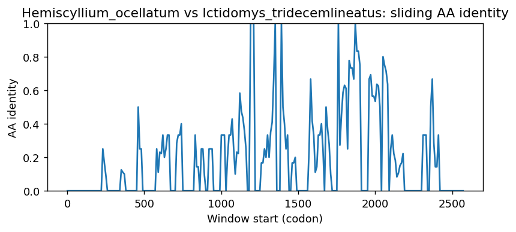

Ortholog Divergence Report
Input: RUBCNL.valid.longest.fa · N sequences: 566 · Aligned length: 2579 codons
Reference: Hemiscyllium_ocellatum
Quick risk overview
- LOW: 0
- INTERMEDIATE: 0
- HIGH: 159895


Composition & complexity per sequence
Saved as per_sequence_composition.csv. High low-complexity or repeat content can reduce BLAST sensitivity due to soft masking.
| id | GC | GC skew | CpG dens. | AA LCR frac | NT repeat frac | AA len | CDS len |
|---|---|---|---|---|---|---|---|
| Hemiscyllium_ocellatum | 0.47397 | 0.0 | 0.01899 | 0.05839 | 0.74599 | 685 | 2055 |
| Xiphophorus_maculatus | 0.54971 | 0.01146 | 0.04635 | 0.11606 | 0.75169 | 741 | 2223 |
| Oryctolagus_cuniculus | 0.54683 | 0.03131 | 0.0398 | 0.08157 | 0.73061 | 662 | 1986 |
| Xiphophorus_hellerii | 0.55201 | 0.01843 | 0.04718 | 0.10125 | 0.74896 | 721 | 2163 |
| Perognathus_longimembris_pacificus | 0.5093 | -0.00296 | 0.01761 | 0.03922 | 0.7275 | 663 | 1989 |
| Equus_przewalskii | 0.50525 | 0.04847 | 0.024 | 0.03898 | 0.72764 | 667 | 2001 |
| Loxodonta_africana | 0.50708 | 0.01636 | 0.02832 | 0.0205 | 0.72426 | 683 | 2049 |
| Erinaceus_europaeus | 0.47697 | 0.01558 | 0.0114 | 0.05646 | 0.70332 | 673 | 2019 |
| Coturnix_japonica | 0.47488 | -0.01012 | 0.02273 | 0.0 | 0.7073 | 763 | 2289 |
| Gambusia_affinis | 0.54237 | 0.02951 | 0.04286 | 0.07203 | 0.75 | 708 | 2124 |
| Phyllostomus_hastatus | 0.61558 | 0.02383 | 0.07237 | 0.09712 | 0.69196 | 659 | 1977 |
| Bos_indicus_x_Bos_taurus | 0.52489 | 0.00192 | 0.03068 | 0.03922 | 0.73152 | 663 | 1989 |
| Osmerus_eperlanus | 0.57775 | 0.00905 | 0.04139 | 0.09415 | 0.75749 | 701 | 2103 |
| Cervus_canadensis | 0.52309 | 0.0 | 0.03014 | 0.06175 | 0.73645 | 664 | 1992 |
| Mirounga_angustirostris | 0.52243 | 0.02439 | 0.02856 | 0.04281 | 0.71916 | 654 | 1962 |
| Acanthochromis_polyacanthus | 0.51595 | 0.03405 | 0.04302 | 0.05409 | 0.77901 | 721 | 2163 |
| Lonchura_striata | 0.45844 | -0.01718 | 0.01488 | 0.04331 | 0.72135 | 762 | 2286 |
| Chlorocebus_sabaeus | 0.48467 | 0.00622 | 0.01761 | 0.10407 | 0.75163 | 663 | 1989 |
| Capra_hircus | 0.5287 | 0.00571 | 0.03426 | 0.06193 | 0.75277 | 662 | 1986 |
| Gymnogyps_californianus | 0.46571 | -0.00563 | 0.0201 | 0.07864 | 0.71516 | 763 | 2289 |
| Caretta_caretta | 0.4255 | -0.02834 | 0.01077 | 0.07364 | 0.73557 | 774 | 2322 |
| Parus_major | 0.46571 | -0.01212 | 0.01693 | 0.0612 | 0.71615 | 768 | 2304 |
| Sarcophilus_harrisii | 0.44659 | -0.04323 | 0.0103 | 0.01544 | 0.73702 | 777 | 2331 |
| Chanos_chanos | 0.53507 | -0.07957 | 0.03533 | 0.07983 | 0.75907 | 689 | 2067 |
| Pseudopipra_pipra | 0.4603 | -0.01991 | 0.0179 | 0.06545 | 0.7199 | 764 | 2292 |
| Cynoglossus_semilaevis | 0.52344 | 0.06965 | 0.0339 | 0.12891 | 0.79297 | 256 | 768 |
| Vulpes_vulpes | 0.53081 | 0.03776 | 0.03566 | 0.06459 | 0.7461 | 449 | 1347 |
| Poecile_atricapillus | 0.46484 | -0.01961 | 0.0178 | 0.0612 | 0.72049 | 768 | 2304 |
| Trematomus_bernacchii | 0.53204 | -0.00405 | 0.02963 | 0.10824 | 0.81799 | 619 | 1857 |
| Apus_apus | 0.46606 | -0.01961 | 0.01872 | 0.07441 | 0.7067 | 766 | 2298 |
| Cololabis_saira | 0.53244 | 0.02003 | 0.03868 | 0.09333 | 0.76 | 750 | 2250 |
| Ovis_aries | 0.52719 | 0.00287 | 0.03375 | 0.06193 | 0.74169 | 662 | 1986 |
| Oncorhynchus_gorbuscha | 0.53762 | 0.00649 | 0.02144 | 0.0 | 0.74738 | 669 | 2007 |
| Malaclemys_terrapin_pileata | 0.42722 | -0.00605 | 0.01465 | 0.05556 | 0.73514 | 774 | 2322 |
| Xenopus_tropicalis | 0.43383 | -0.00858 | 0.01779 | 0.04839 | 0.73863 | 806 | 2418 |
| Anguilla_rostrata | 0.5848 | -0.06883 | 0.04525 | 0.09227 | 0.74627 | 737 | 2211 |
| Mesitornis_unicolor | 0.47539 | -0.00091 | 0.01555 | 0.04016 | 0.72712 | 772 | 2316 |
| Mustela_nigripes | 0.52141 | 0.01075 | 0.03111 | 0.04281 | 0.72375 | 654 | 1962 |
| Antrostomus_carolinensis | 0.46311 | -0.00843 | 0.01954 | 0.04557 | 0.72613 | 768 | 2304 |
| Mesocricetus_auratus | 0.53191 | 0.04 | 0.01656 | 0.0 | 0.71064 | 705 | 2115 |
| Harpia_harpyja | 0.46745 | -0.01121 | 0.02098 | 0.0616 | 0.71166 | 763 | 2289 |
| Rhinopithecus_bieti | 0.48512 | 0.0 | 0.01638 | 0.10714 | 0.74157 | 672 | 2016 |
| Buceros_rhinoceros_silvestris | 0.46894 | -0.01119 | 0.01926 | 0.02362 | 0.73972 | 762 | 2286 |
| Cyprinus_carpio | 0.45953 | -0.01043 | 0.01705 | 0.02077 | 0.76624 | 626 | 1878 |
| Onychomys_torridus | 0.5198 | 0.00797 | 0.0175 | 0.03453 | 0.73343 | 724 | 2172 |
| Prionailurus_bengalensis | 0.52212 | 0.0339 | 0.03591 | 0.10472 | 0.71731 | 678 | 2034 |
| Indicator_indicator | 0.47288 | -0.01573 | 0.02013 | 0.03937 | 0.71304 | 762 | 2286 |
| Malurus_melanocephalus | 0.46221 | -0.02457 | 0.01573 | 0.04063 | 0.70861 | 763 | 2289 |
| Phalacrocorax_carbo | 0.47724 | -0.00636 | 0.02689 | 0.08062 | 0.71045 | 769 | 2307 |
| Paramormyrops_kingsleyae | 0.58035 | -0.07951 | 0.03313 | 0.06352 | 0.75244 | 614 | 1842 |
| Amia_calva | 0.52051 | -0.05419 | 0.02693 | 0.04615 | 0.77735 | 780 | 2340 |
| Solea_solea | 0.5418 | 0.02405 | 0.04291 | 0.14332 | 0.85993 | 614 | 1842 |
| Thalassophryne_amazonica | 0.51582 | -0.00089 | 0.0289 | 0.10316 | 0.76479 | 727 | 2181 |
| Pundamilia_nyererei | 0.49084 | 0.03731 | 0.0229 | 0.08104 | 0.76557 | 728 | 2184 |
| Rattus_rattus | 0.52178 | -0.00938 | 0.01861 | 0.04112 | 0.72834 | 681 | 2043 |
| Onychostoma_macrolepis | 0.45781 | -0.01934 | 0.01563 | 0.0375 | 0.78438 | 640 | 1920 |
| Meles_meles | 0.52169 | -0.00391 | 0.02911 | 0.06585 | 0.71618 | 653 | 1959 |
| Corvus_cornix_cornix | 0.45899 | -0.02471 | 0.01309 | 0.06806 | 0.71291 | 764 | 2292 |
| Pongo_abelii | 0.47707 | 0.02874 | 0.01561 | 0.10496 | 0.74988 | 705 | 2115 |
| Aquila_chrysaetos_chrysaetos | 0.46789 | -0.0084 | 0.0236 | 0.0616 | 0.7287 | 763 | 2289 |
| Lepisosteus_oculatus | 0.58264 | -0.03745 | 0.05109 | 0.09331 | 0.73166 | 718 | 2154 |
| Mirounga_leonina | 0.52294 | 0.02924 | 0.02958 | 0.04281 | 0.70897 | 654 | 1962 |
| Falco_naumanni | 0.46335 | -0.02448 | 0.01615 | 0.06021 | 0.70942 | 764 | 2292 |
| Talpa_occidentalis | 0.50229 | -0.00709 | 0.02495 | 0.04885 | 0.73791 | 655 | 1965 |
| Girardinichthys_multiradiatus | 0.49132 | 0.03623 | 0.01959 | 0.03872 | 0.7441 | 749 | 2247 |
| Mandrillus_leucophaeus | 0.48643 | -0.00421 | 0.01793 | 0.10599 | 0.74398 | 651 | 1953 |
| Pongo_pygmaeus | 0.47565 | 0.02584 | 0.01561 | 0.12199 | 0.75177 | 705 | 2115 |
| Astatotilapia_calliptera | 0.49222 | 0.03814 | 0.02245 | 0.08516 | 0.76007 | 728 | 2184 |
| Aotus_nancymaae | 0.47068 | 0.02132 | 0.01586 | 0.06815 | 0.7401 | 631 | 1893 |
| Oncorhynchus_kisutch | 0.53363 | 0.0028 | 0.01745 | 0.01794 | 0.75785 | 669 | 2007 |
| Eschrichtius_robustus | 0.52252 | 0.04023 | 0.03205 | 0.08108 | 0.71772 | 666 | 1998 |
| Macaca_mulatta | 0.48203 | -0.00102 | 0.01675 | 0.08419 | 0.73904 | 677 | 2031 |
| Myotis_myotis | 0.478 | 0.02857 | 0.01518 | 0.08346 | 0.7127 | 659 | 1977 |
| Salvelinus_namaycush | 0.53773 | 0.01115 | 0.0195 | 0.0 | 0.75462 | 667 | 2001 |
| Embiotoca_jacksoni | 0.53958 | -0.01059 | 0.03388 | 0.12665 | 0.81574 | 758 | 2274 |
| Cyclopterus_lumpus | 0.55253 | 0.02073 | 0.0407 | 0.10071 | 0.78239 | 844 | 2532 |
| Odobenus_rosmarus_divergens | 0.51427 | 0.02478 | 0.02499 | 0.03976 | 0.71152 | 654 | 1962 |
| Nyctibius_grandis | 0.46597 | -0.0206 | 0.02226 | 0.06675 | 0.69764 | 764 | 2292 |
| Carassius_gibelio | 0.47496 | -0.0068 | 0.0194 | 0.05654 | 0.74044 | 619 | 1857 |
| Halichoerus_grypus | 0.52396 | 0.03113 | 0.0306 | 0.04281 | 0.7105 | 654 | 1962 |
| Molothrus_ater | 0.45938 | -0.04207 | 0.01318 | 0.06456 | 0.71849 | 759 | 2277 |
| Gavia_stellata | 0.46719 | 0.0 | 0.02495 | 0.05643 | 0.70954 | 762 | 2286 |
| Elephas_maximus_indicus | 0.51533 | 0.04 | 0.03219 | 0.06335 | 0.73002 | 663 | 1989 |
| Dryobates_pubescens | 0.51531 | 0.00849 | 0.03063 | 0.05643 | 0.73447 | 762 | 2286 |
| Chroicocephalus_ridibundus | 0.47495 | -0.03119 | 0.02441 | 0.04706 | 0.70545 | 765 | 2295 |
| Sinocyclocheilus_anshuiensis | 0.46503 | -0.02233 | 0.01914 | 0.0 | 0.77268 | 610 | 1830 |
| Apteryx_mantelli | 0.45593 | 0.01244 | 0.01659 | 0.05759 | 0.69677 | 764 | 2292 |
| Tauraco_erythrolophus | 0.44846 | 0.01007 | 0.01431 | 0.03386 | 0.67871 | 443 | 1329 |
| Bufo_gargarizans | 0.46362 | 0.01538 | 0.02997 | 0.03424 | 0.7437 | 701 | 2103 |
| Pristis_pectinata | 0.43215 | 0.02162 | 0.01377 | 0.0236 | 0.75418 | 678 | 2034 |
| Dermochelys_coriacea | 0.41785 | -0.02993 | 0.00906 | 0.05692 | 0.74213 | 773 | 2319 |
| Gasterosteus_aculeatus | 0.59633 | 0.02159 | 0.06838 | 0.10996 | 0.75978 | 673 | 2019 |
| Poecilia_formosa | 0.56195 | 0.0361 | 0.04937 | 0.12171 | 0.76261 | 608 | 1824 |
| Pelobates_fuscus | 0.40801 | -0.0011 | 0.01755 | 0.08097 | 0.7112 | 741 | 2223 |
| Sorex_araneus | 0.49264 | -0.02163 | 0.02335 | 0.05936 | 0.70472 | 657 | 1971 |
| Otolemur_garnettii | 0.5 | 0.025 | 0.02137 | 0.0 | 0.70469 | 640 | 1920 |
| Lynx_canadensis | 0.52441 | 0.03491 | 0.03241 | 0.13521 | 0.71737 | 710 | 2130 |
| Ursus_arctos | 0.52701 | 0.02515 | 0.02958 | 0.08104 | 0.71764 | 654 | 1962 |
| Camarhynchus_parvulus | 0.46948 | -0.03087 | 0.01757 | 0.06456 | 0.70971 | 759 | 2277 |
| Homo_sapiens | 0.48439 | 0.02703 | 0.01864 | 0.13142 | 0.75478 | 662 | 1986 |
| Oxyura_jamaicensis | 0.48646 | 0.0 | 0.0292 | 0.1066 | 0.74069 | 788 | 2364 |
| Camelus_dromedarius | 0.54834 | 0.04132 | 0.03577 | 0.07855 | 0.71853 | 662 | 1986 |
| Rattus_norvegicus | 0.51542 | -0.00855 | 0.01763 | 0.05874 | 0.73617 | 681 | 2043 |
| Scomber_japonicus | 0.50044 | 0.0159 | 0.01858 | 0.03979 | 0.78161 | 754 | 2262 |
| Falco_cherrug | 0.46466 | -0.0216 | 0.01571 | 0.06021 | 0.71466 | 764 | 2292 |
| Microtus_ochrogaster | 0.54363 | 0.02976 | 0.02305 | 0.0 | 0.75294 | 680 | 2040 |
| Tachyglossus_aculeatus | 0.52544 | -0.03339 | 0.03379 | 0.08684 | 0.73114 | 760 | 2280 |
| Pleuronectes_platessa | 0.58385 | 0.0 | 0.05075 | 0.15217 | 0.75621 | 644 | 1932 |
| Carassius_carassius | 0.46677 | -0.00231 | 0.01892 | 0.07455 | 0.75149 | 617 | 1851 |
| Symphalangus_syndactylus | 0.47849 | 0.01779 | 0.01656 | 0.08085 | 0.73428 | 705 | 2115 |
| Haliaeetus_leucocephalus | 0.46535 | -0.01225 | 0.0215 | 0.06316 | 0.71974 | 760 | 2280 |
| Eumetopias_jubatus | 0.51438 | 0.01832 | 0.0268 | 0.08036 | 0.70288 | 672 | 2016 |
| Fukomys_damarensis | 0.51511 | 0.00098 | 0.02317 | 0.09215 | 0.71299 | 662 | 1986 |
| Equus_caballus | 0.50525 | 0.04649 | 0.024 | 0.03898 | 0.72364 | 667 | 2001 |
| Macaca_thibetana_thibetana | 0.47179 | 0.0 | 0.0171 | 0.0906 | 0.75783 | 585 | 1755 |
| Dendropsophus_ebraccatus | 0.44924 | 0.00679 | 0.02092 | 0.04967 | 0.71721 | 765 | 2295 |
| Seriola_dumerili | 0.56531 | -0.02009 | 0.0472 | 0.12451 | 0.81433 | 763 | 2289 |
| Eurypyga_helias | 0.48207 | -0.00826 | 0.02834 | 0.05976 | 0.72864 | 753 | 2259 |
| Misgurnus_anguillicaudatus | 0.44648 | -0.06621 | 0.01581 | 0.01835 | 0.74465 | 654 | 1962 |
| Phoca_vitulina | 0.52446 | 0.03207 | 0.03009 | 0.04281 | 0.70234 | 654 | 1962 |
| Passer_montanus | 0.46553 | -0.01968 | 0.01528 | 0.04712 | 0.71859 | 764 | 2292 |
| Osmerus_mordax | 0.57394 | 0.01077 | 0.04044 | 0.08987 | 0.74941 | 701 | 2103 |
| Archocentrus_centrarchus | 0.5216 | -0.00592 | 0.02823 | 0.05952 | 0.76764 | 756 | 2268 |
| Zonotrichia_leucophrys_gambelii | 0.48419 | -0.04327 | 0.02363 | 0.08229 | 0.70438 | 875 | 2625 |
| Eptesicus_fuscus | 0.48306 | 0.03874 | 0.02126 | 0.08801 | 0.70663 | 659 | 1977 |
| Pteropus_alecto | 0.48018 | 0.03069 | 0.01474 | 0.10213 | 0.73018 | 656 | 1968 |
| Pleurodeles_waltl | 0.45874 | -0.03175 | 0.02752 | 0.0 | 0.72371 | 824 | 2472 |
| Rhinichthys_klamathensis_goyatoka | 0.46601 | 0.00471 | 0.01755 | 0.0 | 0.77577 | 608 | 1824 |
| Anser_cygnoides | 0.48139 | 0.00176 | 0.02624 | 0.09772 | 0.72758 | 788 | 2364 |
| Bos_taurus | 0.52388 | 0.0 | 0.02968 | 0.03922 | 0.73253 | 663 | 1989 |
| Acinonyx_jubatus | 0.52037 | 0.04151 | 0.03291 | 0.10457 | 0.71429 | 679 | 2037 |
| Rhinolophus_ferrumequinum | 0.49899 | 0.03846 | 0.02324 | 0.10455 | 0.71313 | 660 | 1980 |
| Heterocephalus_glaber | 0.50675 | -0.00394 | 0.019 | 0.08246 | 0.70465 | 667 | 2001 |
| Channa_argus | 0.54978 | 0.04123 | 0.03735 | 0.09467 | 0.78311 | 750 | 2250 |
| Enhydra_lutris_kenyoni | 0.52396 | 0.01946 | 0.03264 | 0.04281 | 0.71611 | 654 | 1962 |
| Lontra_canadensis | 0.52396 | 0.01362 | 0.03315 | 0.06116 | 0.70846 | 654 | 1962 |
| Hippoglossus_hippoglossus | 0.56622 | -0.00794 | 0.047 | 0.14693 | 0.8076 | 667 | 2001 |
| Panthera_tigris | 0.52528 | 0.03565 | 0.03419 | 0.1236 | 0.72004 | 712 | 2136 |
| Melopsittacus_undulatus | 0.45462 | -0.02303 | 0.01179 | 0.1178 | 0.74869 | 764 | 2292 |
| Micropterus_dolomieu | 0.53112 | 0.01215 | 0.03275 | 0.0332 | 0.79576 | 723 | 2169 |
| Mesoplodon_densirostris | 0.51524 | 0.04753 | 0.0305 | 0.08246 | 0.73313 | 667 | 2001 |
| Falco_biarmicus | 0.46466 | -0.0216 | 0.01571 | 0.06021 | 0.71466 | 764 | 2292 |
| Hirundo_rustica | 0.47544 | -0.00554 | 0.01931 | 0.08289 | 0.71623 | 760 | 2280 |
| Delphinapterus_leucas | 0.52174 | 0.04215 | 0.034 | 0.09895 | 0.71314 | 667 | 2001 |
| Rhea_pennata | 0.44055 | 0.00491 | 0.01125 | 0.06355 | 0.70342 | 771 | 2313 |
| Oncorhynchus_keta | 0.53463 | 0.00466 | 0.02044 | 0.0 | 0.74639 | 669 | 2007 |
| Scyliorhinus_canicula | 0.45586 | 0.00952 | 0.02124 | 0.04776 | 0.76942 | 691 | 2073 |
| Charadrius_vociferus | 0.47557 | -0.01284 | 0.02488 | 0.06675 | 0.71248 | 764 | 2292 |
| Limanda_limanda | 0.59416 | 0.00339 | 0.0539 | 0.16465 | 0.80312 | 662 | 1986 |
| Aythya_fuligula | 0.49148 | -0.02044 | 0.02841 | 0.07471 | 0.72739 | 763 | 2289 |
| Chamaea_fasciata | 0.46949 | -0.02582 | 0.01819 | 0.07758 | 0.70182 | 825 | 2475 |
| Mustela_putorius_furo | 0.52243 | 0.00683 | 0.0306 | 0.04281 | 0.71916 | 654 | 1962 |
| Neopsephotus_bourkii | 0.45724 | -0.02481 | 0.01266 | 0.08377 | 0.72688 | 764 | 2292 |
| Polypterus_senegalus | 0.39617 | 0.04387 | 0.01293 | 0.0508 | 0.68984 | 748 | 2244 |
| Meleagris_gallopavo | 0.45185 | -0.00703 | 0.01535 | 0.04603 | 0.72434 | 630 | 1890 |
| Oryx_dammah | 0.52669 | 0.01338 | 0.03123 | 0.08308 | 0.73464 | 662 | 1986 |
| Lutra_lutra | 0.52192 | 0.01562 | 0.03111 | 0.04281 | 0.71713 | 654 | 1962 |
| Paralichthys_olivaceus | 0.57011 | 0.00766 | 0.05291 | 0.16739 | 0.81611 | 687 | 2061 |
| Phaenicophaeus_curvirostris | 0.4639 | -0.0233 | 0.01817 | 0.06355 | 0.68612 | 771 | 2313 |
| Scomber_scombrus | 0.49978 | 0.03052 | 0.01706 | 0.05653 | 0.77658 | 743 | 2229 |
| Myiozetetes_cayanensis | 0.45375 | -0.02308 | 0.01397 | 0.05759 | 0.69895 | 764 | 2292 |
| Pezoporus_occidentalis | 0.46161 | -0.02079 | 0.01353 | 0.10209 | 0.73429 | 764 | 2292 |
| Lynx_rufus | 0.52582 | 0.03036 | 0.03335 | 0.11549 | 0.71831 | 710 | 2130 |
| Balearica_regulorum_gibbericeps | 0.47414 | -0.00092 | 0.02826 | 0.09648 | 0.69839 | 767 | 2301 |
| Microtus_oregoni | 0.54608 | 0.02513 | 0.02403 | 0.0 | 0.73824 | 680 | 2040 |
| Ornithorhynchus_anatinus | 0.51013 | -0.04311 | 0.02675 | 0.08926 | 0.73006 | 773 | 2319 |
| Dromaius_novaehollandiae | 0.45352 | 0.01239 | 0.0199 | 0.04799 | 0.70558 | 771 | 2313 |
| Phasianus_colchicus | 0.4609 | 0.00474 | 0.01792 | 0.07208 | 0.71909 | 763 | 2289 |
| Ranitomeya_imitator | 0.46491 | 0.00755 | 0.0351 | 0.06316 | 0.71491 | 760 | 2280 |
| Larimichthys_crocea | 0.53003 | -0.00718 | 0.03343 | 0.07741 | 0.80076 | 788 | 2364 |
| Strigops_habroptila | 0.45833 | -0.01515 | 0.01172 | 0.10938 | 0.73611 | 768 | 2304 |
| Myotis_daubentonii | 0.47648 | 0.03185 | 0.01569 | 0.08346 | 0.69752 | 659 | 1977 |
| Phocoena_sinus | 0.52224 | 0.04115 | 0.0355 | 0.10495 | 0.71514 | 667 | 2001 |
| Ammospiza_nelsoni | 0.47149 | -0.0307 | 0.01667 | 0.07763 | 0.71096 | 760 | 2280 |
| Hyaena_hyaena | 0.51501 | 0.0415 | 0.02902 | 0.13282 | 0.73893 | 655 | 1965 |
| Equus_quagga | 0.50475 | 0.04158 | 0.0235 | 0.03898 | 0.73163 | 667 | 2001 |
| Micropterus_salmoides | 0.53216 | -0.00255 | 0.03398 | 0.03261 | 0.78397 | 736 | 2208 |
| Lagopus_leucura | 0.47007 | -0.00186 | 0.0201 | 0.04587 | 0.7156 | 763 | 2289 |
| Myodes_glareolus | 0.54345 | 0.04065 | 0.02554 | 0.0 | 0.74374 | 679 | 2037 |
| Orcinus_orca | 0.52624 | 0.03704 | 0.0365 | 0.08396 | 0.72514 | 667 | 2001 |
| Meriones_unguiculatus | 0.54576 | 0.02693 | 0.02609 | 0.05263 | 0.75059 | 703 | 2109 |
| Saimiri_boliviensis | 0.48517 | 0.02798 | 0.01911 | 0.04072 | 0.7456 | 663 | 1989 |
| Pungitius_pungitius | 0.6351 | -0.01657 | 0.07751 | 0.21377 | 0.71688 | 697 | 2091 |
| Pimephales_promelas | 0.46029 | 0.01094 | 0.01455 | 0.0 | 0.76454 | 596 | 1788 |
| Lampris_incognitus | 0.52288 | 0.00156 | 0.02493 | 0.04902 | 0.73856 | 816 | 2448 |
| Cinclus_cinclus | 0.45822 | -0.01614 | 0.01132 | 0.07441 | 0.71976 | 766 | 2298 |
| Delphinus_delphis | 0.52974 | 0.0434 | 0.038 | 0.08696 | 0.71364 | 667 | 2001 |
| Pan_troglodytes | 0.48316 | 0.02601 | 0.01811 | 0.13122 | 0.75515 | 663 | 1989 |
| Bufo_bufo | 0.45796 | 0.01883 | 0.02632 | 0.04787 | 0.73652 | 773 | 2319 |
| Neoarius_graeffei | 0.47039 | 0.01632 | 0.02523 | 0.02138 | 0.71985 | 608 | 1824 |
| Nannospalax_galili | 0.5005 | 0.01006 | 0.0136 | 0.0423 | 0.73313 | 662 | 1986 |
| Anarrhichthys_ocellatus | 0.53551 | -0.02522 | 0.03575 | 0.0719 | 0.79085 | 765 | 2295 |
| Microcebus_murinus | 0.51533 | 0.01854 | 0.02767 | 0.04072 | 0.71795 | 663 | 1989 |
| Puntigrus_tetrazona | 0.47521 | 0.02109 | 0.02744 | 0.03323 | 0.78534 | 632 | 1896 |
| Carassius_auratus | 0.47294 | -0.00915 | 0.01895 | 0.03409 | 0.7224 | 616 | 1848 |
| Lepus_europaeus | 0.54065 | 0.00564 | 0.03203 | 0.08232 | 0.70681 | 656 | 1968 |
| Pangasianodon_hypophthalmus | 0.49141 | 0.02564 | 0.03266 | 0.02062 | 0.748 | 582 | 1746 |
| Alligator_sinensis | 0.43593 | -0.00465 | 0.0146 | 0.08637 | 0.74453 | 822 | 2466 |
| Callorhinchus_milii | 0.43709 | 0.00322 | 0.01456 | 0.02676 | 0.7446 | 710 | 2130 |
| Oryzias_latipes | 0.51876 | -0.03242 | 0.02934 | 0.11514 | 0.75507 | 773 | 2319 |
| Boleophthalmus_pectinirostris | 0.52183 | 0.00634 | 0.02449 | 0.0754 | 0.75397 | 504 | 1512 |
| Macaca_nemestrina | 0.48154 | -0.00204 | 0.01724 | 0.10192 | 0.74003 | 677 | 2031 |
| Dipodomys_ordii | 0.50815 | 0.01304 | 0.01836 | 0.03976 | 0.737 | 654 | 1962 |
| Corvus_hawaiiensis | 0.45942 | -0.02754 | 0.01484 | 0.07068 | 0.71815 | 764 | 2292 |
| Epinephelus_moara | 0.54697 | -0.02064 | 0.03344 | 0.10976 | 0.81572 | 738 | 2214 |
| Lipotes_vexillifer | 0.51912 | 0.04149 | 0.02694 | 0.06785 | 0.72967 | 619 | 1857 |
| Globicephala_melas | 0.52324 | 0.03725 | 0.036 | 0.06297 | 0.71214 | 667 | 2001 |
| Phocoena_phocoena | 0.52174 | 0.04215 | 0.035 | 0.10495 | 0.71414 | 667 | 2001 |
| Panthera_leo | 0.52481 | 0.03479 | 0.03466 | 0.14045 | 0.7191 | 712 | 2136 |
| Jaculus_jaculus | 0.50177 | -0.01613 | 0.01468 | 0.0258 | 0.77946 | 659 | 1977 |
| Manis_javanica | 0.50883 | 0.06442 | 0.01968 | 0.08775 | 0.7292 | 661 | 1983 |
| Miniopterus_natalensis | 0.47366 | 0.05241 | 0.01673 | 0.04559 | 0.72695 | 658 | 1974 |
| Spea_bombifrons | 0.44002 | 0.02616 | 0.0279 | 0.05046 | 0.73528 | 753 | 2259 |
| Hypomesus_transpacificus | 0.58525 | 0.00077 | 0.04275 | 0.16869 | 0.7157 | 741 | 2223 |
| Gracilinanus_agilis | 0.47772 | -0.01345 | 0.01715 | 0.04627 | 0.70051 | 778 | 2334 |
| Clinocottus_analis | 0.59312 | 0.02421 | 0.06313 | 0.10052 | 0.802 | 766 | 2298 |
| Eulemur_rufifrons | 0.51255 | 0.0284 | 0.02712 | 0.08283 | 0.70633 | 664 | 1992 |
| Oryzias_melastigma | 0.53416 | 0.01116 | 0.03532 | 0.11692 | 0.74003 | 727 | 2181 |
| Cheilinus_undulatus | 0.52018 | -0.02682 | 0.02891 | 0.11809 | 0.79273 | 669 | 2007 |
| Xiphias_gladius | 0.5705 | 0.01714 | 0.053 | 0.0978 | 0.78484 | 818 | 2454 |
| Tupaia_chinensis | 0.47533 | 0.02966 | 0.0131 | 0.0423 | 0.69386 | 662 | 1986 |
| Brienomyrus_brachyistius | 0.58022 | -0.08578 | 0.03145 | 0.07662 | 0.73346 | 509 | 1527 |
| Danio_rerio | 0.4645 | 0.01284 | 0.01573 | 0.06341 | 0.74688 | 615 | 1845 |
| Platichthys_flesus | 0.58095 | -0.01639 | 0.04915 | 0.0812 | 0.76491 | 665 | 1995 |
| Saccopteryx_leptura | 0.50587 | 0.0333 | 0.01839 | 0.09801 | 0.73354 | 653 | 1959 |
| Peromyscus_eremicus | 0.52663 | 0.01308 | 0.02205 | 0.01653 | 0.72176 | 726 | 2178 |
| Chanodichthys_erythropterus | 0.46191 | -0.01988 | 0.01838 | 0.02269 | 0.76067 | 617 | 1851 |
| Melospiza_melodia_melodia | 0.47248 | -0.03262 | 0.01938 | 0.06209 | 0.71554 | 757 | 2271 |
| Gavialis_gangeticus | 0.4267 | -0.01431 | 0.01091 | 0.06021 | 0.75393 | 764 | 2292 |
| Megalobrama_amblycephala | 0.45942 | -0.01296 | 0.01462 | 0.02435 | 0.7684 | 616 | 1848 |
| Etheostoma_cragini | 0.54701 | 0.0 | 0.0342 | 0.0812 | 0.77208 | 702 | 2106 |
| Orycteropus_afer_afer | 0.48407 | 0.03866 | 0.01872 | 0.06829 | 0.72787 | 659 | 1977 |
| Rissa_tridactyla | 0.47669 | -0.02742 | 0.02528 | 0.04706 | 0.70458 | 765 | 2295 |
| Haliaeetus_albicilla | 0.46527 | -0.01033 | 0.02098 | 0.06291 | 0.71865 | 763 | 2289 |
| Chinchilla_lanigera | 0.49748 | 0.03041 | 0.01193 | 0.0564 | 0.76066 | 727 | 2181 |
| Nothoprocta_perdicaria | 0.44957 | 0.01711 | 0.01368 | 0.03846 | 0.68333 | 780 | 2340 |
| Echinops_telfairi | 0.56426 | 0.02593 | 0.03607 | 0.02038 | 0.72048 | 638 | 1914 |
| Prionailurus_viverrinus | 0.52359 | 0.03876 | 0.03655 | 0.10807 | 0.72095 | 657 | 1971 |
| Phodopus_roborovskii | 0.53088 | 0.02678 | 0.01422 | 0.0 | 0.71225 | 680 | 2040 |
| Diceros_bicornis_minor | 0.51474 | 0.04854 | 0.029 | 0.02099 | 0.74913 | 667 | 2001 |
| Acanthisitta_chloris | 0.46073 | -0.01326 | 0.01615 | 0.07068 | 0.72339 | 764 | 2292 |
| Narcine_bancroftii | 0.44939 | 0.01502 | 0.01755 | 0.03509 | 0.73324 | 741 | 2223 |
| Simochromis_diagramma | 0.49063 | 0.03821 | 0.02287 | 0.08505 | 0.76269 | 729 | 2187 |
| Piliocolobus_tephrosceles | 0.48516 | 0.01325 | 0.01534 | 0.10682 | 0.73442 | 674 | 2022 |
| Acomys_russatus | 0.51746 | 0.01294 | 0.01627 | 0.01722 | 0.74175 | 697 | 2091 |
| Ailuropoda_melanoleuca | 0.51733 | 0.03448 | 0.02754 | 0.05963 | 0.71865 | 654 | 1962 |
| Hoplias_malabaricus | 0.51235 | -0.00201 | 0.03294 | 0.0679 | 0.76337 | 648 | 1944 |
| Parambassis_ranga | 0.51757 | 0.02569 | 0.02375 | 0.03561 | 0.75546 | 702 | 2106 |
| Moschus_berezovskii | 0.52761 | 0.01237 | 0.03265 | 0.06175 | 0.74498 | 664 | 1992 |
| Trichosurus_vulpecula | 0.46187 | -0.01887 | 0.01351 | 0.03399 | 0.69891 | 765 | 2295 |
| Hylobates_moloch | 0.48423 | 0.01629 | 0.02052 | 0.11987 | 0.73922 | 634 | 1902 |
| Mastacembelus_armatus | 0.56369 | -0.01122 | 0.03796 | 0.12466 | 0.79088 | 738 | 2214 |
| Taeniopygia_guttata | 0.45801 | -0.02579 | 0.014 | 0.04331 | 0.71872 | 762 | 2286 |
| Anguilla_anguilla | 0.58254 | -0.06988 | 0.04299 | 0.09905 | 0.73994 | 737 | 2211 |
| Ursus_maritimus | 0.52752 | 0.02609 | 0.03009 | 0.08104 | 0.71662 | 654 | 1962 |
| Cygnus_olor | 0.47969 | -0.00364 | 0.0271 | 0.09305 | 0.71822 | 763 | 2289 |
| Bos_javanicus | 0.52187 | 0.0 | 0.02918 | 0.03922 | 0.73504 | 663 | 1989 |
| Callorhinus_ursinus | 0.51438 | 0.01832 | 0.0263 | 0.08036 | 0.70784 | 672 | 2016 |
| Sturnus_vulgaris | 0.46745 | -0.01308 | 0.01399 | 0.06946 | 0.70686 | 763 | 2289 |
| Dipodomys_spectabilis | 0.51019 | 0.00899 | 0.01887 | 0.01835 | 0.72834 | 654 | 1962 |
| Panthera_uncia | 0.52341 | 0.03399 | 0.03279 | 0.13483 | 0.72846 | 712 | 2136 |
| Cricetulus_griseus | 0.52102 | 0.02627 | 0.01369 | 0.0176 | 0.74096 | 682 | 2046 |
| Melospiza_georgiana | 0.47167 | -0.03166 | 0.01714 | 0.06192 | 0.7141 | 759 | 2277 |
| Petaurus_breviceps_papuanus | 0.46087 | -0.03002 | 0.01254 | 0.01556 | 0.71725 | 771 | 2313 |
| Maylandia_zebra | 0.49038 | 0.03828 | 0.02153 | 0.08516 | 0.75824 | 728 | 2184 |
| Mustela_lutreola | 0.52039 | 0.00686 | 0.03009 | 0.04281 | 0.72018 | 654 | 1962 |
| Xyrauchen_texanus | 0.46637 | -0.04413 | 0.01657 | 0.10241 | 0.75653 | 664 | 1992 |
| Geotrypetes_seraphini | 0.45915 | 0.02528 | 0.01811 | 0.04318 | 0.74095 | 718 | 2154 |
| Pseudochaenichthys_georgianus | 0.53117 | 0.0102 | 0.02928 | 0.06829 | 0.81084 | 615 | 1845 |
| Pelodiscus_sinensis | 0.41774 | -0.01237 | 0.01206 | 0.05685 | 0.71533 | 774 | 2322 |
| Eleginops_maclovinus | 0.5617 | 0.03555 | 0.03637 | 0.11982 | 0.79724 | 651 | 1953 |
| Lagenorhynchus_albirostris | 0.52924 | 0.04816 | 0.039 | 0.10495 | 0.71564 | 667 | 2001 |
| Heptranchias_perlo | 0.44314 | 0.03524 | 0.01514 | 0.08053 | 0.78477 | 683 | 2049 |
| Struthio_camelus | 0.45304 | 0.01068 | 0.02016 | 0.04595 | 0.69125 | 827 | 2481 |
| Gopherus_evgoodei | 0.42162 | -0.01328 | 0.01077 | 0.04005 | 0.73945 | 774 | 2322 |
| Sylvia_atricapilla | 0.46771 | -0.00933 | 0.01659 | 0.04581 | 0.70201 | 764 | 2292 |
| Neofelis_nebulosa | 0.52108 | 0.04421 | 0.03678 | 0.10735 | 0.71667 | 680 | 2040 |
| Opisthocomus_hoazin | 0.49441 | 0.01883 | 0.0326 | 0.06844 | 0.74814 | 716 | 2148 |
| Salarias_fasciatus | 0.55751 | -0.00421 | 0.03993 | 0.07042 | 0.79871 | 568 | 1704 |
| Anomalospiza_imberbis | 0.46335 | -0.01883 | 0.01659 | 0.06021 | 0.71161 | 764 | 2292 |
| Anabas_testudineus | 0.53608 | -0.00962 | 0.0361 | 0.06314 | 0.80112 | 776 | 2328 |
| Balaenoptera_acutorostrata | 0.52674 | 0.04554 | 0.035 | 0.08396 | 0.72864 | 667 | 2001 |
| Oncorhynchus_masou_masou | 0.53523 | 0.01027 | 0.02 | 0.02399 | 0.75712 | 667 | 2001 |
| Rhinatrema_bivittatum | 0.49739 | -0.01487 | 0.0357 | 0.03525 | 0.73107 | 766 | 2298 |
| Fulmarus_glacialis | 0.47513 | -0.0101 | 0.02357 | 0.06283 | 0.70244 | 764 | 2292 |
| Felis_catus | 0.5243 | 0.03745 | 0.03684 | 0.08689 | 0.72018 | 679 | 2037 |
| Dama_dama | 0.52108 | -0.00385 | 0.02913 | 0.06175 | 0.73092 | 664 | 1992 |
| Thunnus_albacares | 0.5046 | 0.00347 | 0.01578 | 0.08541 | 0.76303 | 761 | 2283 |
| Corvus_kubaryi | 0.46248 | -0.02075 | 0.01571 | 0.06806 | 0.71553 | 764 | 2292 |
| Passer_domesticus | 0.4664 | -0.0159 | 0.01571 | 0.04712 | 0.71859 | 764 | 2292 |
| Chrysochloris_asiatica | 0.50102 | 0.03967 | 0.0255 | 0.09021 | 0.71509 | 654 | 1962 |
| Grus_americana | 0.47631 | 0.00182 | 0.02783 | 0.09648 | 0.69535 | 767 | 2301 |
| Triplophysa_dalaica | 0.45535 | -0.03307 | 0.01662 | 0.02648 | 0.71547 | 642 | 1926 |
| Grammomys_surdaster | 0.51111 | 0.01063 | 0.01334 | 0.03704 | 0.7516 | 675 | 2025 |
| Cottoperca_gobio | 0.57805 | -0.00713 | 0.04639 | 0.08655 | 0.83205 | 647 | 1941 |
| Tinamus_guttatus | 0.44488 | 0.03401 | 0.01298 | 0.04669 | 0.71249 | 771 | 2313 |
| Toxotes_jaculatrix | 0.53484 | -0.03568 | 0.02798 | 0.13582 | 0.77452 | 751 | 2253 |
| Monopterus_albus | 0.53621 | 0.01058 | 0.02532 | 0.0733 | 0.77531 | 764 | 2292 |
| Perca_flavescens | 0.57322 | 0.02521 | 0.04771 | 0.15462 | 0.77071 | 692 | 2076 |
| Dicentrarchus_labrax | 0.51145 | -0.01327 | 0.0157 | 0.06234 | 0.75233 | 786 | 2358 |
| Athene_cunicularia | 0.46325 | -0.0255 | 0.01751 | 0.07218 | 0.74191 | 762 | 2286 |
| Ictalurus_furcatus | 0.47342 | 0.03831 | 0.02003 | 0.05441 | 0.7142 | 533 | 1599 |
| Rana_temporaria | 0.43414 | 0.00683 | 0.01653 | 0.05464 | 0.73782 | 787 | 2361 |
| Pipistrellus_kuhlii | 0.47344 | 0.03419 | 0.01721 | 0.03642 | 0.70713 | 659 | 1977 |
| Bubalus_bubalis | 0.5264 | -0.00096 | 0.03068 | 0.02112 | 0.71493 | 663 | 1989 |
| Coregonus_clupeaformis | 0.54726 | 0.02364 | 0.0224 | 0.04478 | 0.77214 | 670 | 2010 |
| Electrophorus_electricus | 0.48402 | -0.04433 | 0.02099 | 0.0372 | 0.75918 | 699 | 2097 |
| Cercocebus_atys | 0.48416 | 0.00519 | 0.01811 | 0.10407 | 0.74761 | 663 | 1989 |
| Nyctereutes_procyonoides | 0.58824 | 0.01714 | 0.05493 | 0.14622 | 0.707 | 595 | 1785 |
| Leptosomus_discolor | 0.46815 | -0.0028 | 0.02052 | 0.0445 | 0.70768 | 764 | 2292 |
| Macaca_fascicularis | 0.48252 | 0.00204 | 0.01576 | 0.10192 | 0.73904 | 677 | 2031 |
| Oncorhynchus_mykiss | 0.53704 | 0.00466 | 0.01853 | 0.0 | 0.75776 | 666 | 1998 |
| Prinia_subflava | 0.46902 | -0.02326 | 0.01746 | 0.08508 | 0.71946 | 764 | 2292 |
| Scleropages_formosus | 0.64909 | -0.02909 | 0.07101 | 0.08984 | 0.72005 | 512 | 1536 |
| Pteropus_giganteus | 0.47859 | 0.02875 | 0.01377 | 0.09939 | 0.72936 | 654 | 1962 |
| Myotis_brandtii | 0.47951 | 0.03376 | 0.01771 | 0.06373 | 0.70258 | 659 | 1977 |
| Plectropomus_leopardus | 0.56821 | -0.01943 | 0.04594 | 0.12053 | 0.81854 | 755 | 2265 |
| Trichechus_manatus_latirostris | 0.50927 | 0.01772 | 0.0326 | 0.06015 | 0.72932 | 665 | 1995 |
| Antechinus_flavipes | 0.44873 | -0.04015 | 0.0103 | 0.01544 | 0.72115 | 777 | 2331 |
| Marmota_monax | 0.49641 | 0.02697 | 0.01627 | 0.05452 | 0.72645 | 697 | 2091 |
| Oreochromis_niloticus | 0.48697 | 0.03099 | 0.02379 | 0.0823 | 0.76635 | 729 | 2187 |
| Stegostoma_tigrinum | 0.47541 | 0.00766 | 0.02096 | 0.06148 | 0.73998 | 732 | 2196 |
| Sinocyclocheilus_grahami | 0.47086 | -0.05198 | 0.01924 | 0.0 | 0.78846 | 572 | 1716 |
| Monodon_monoceros | 0.52124 | 0.04506 | 0.034 | 0.10345 | 0.71814 | 667 | 2001 |
| Microcaecilia_unicolor | 0.47045 | -0.00294 | 0.01848 | 0.03324 | 0.71745 | 722 | 2166 |
| Geospiza_fortis | 0.46992 | -0.03178 | 0.01714 | 0.06456 | 0.70927 | 759 | 2277 |
| Budorcas_taxicolor | 0.52568 | 0.00575 | 0.03325 | 0.10574 | 0.73615 | 662 | 1986 |
| Apaloderma_vittatum | 0.47295 | -0.02214 | 0.02226 | 0.11649 | 0.72775 | 764 | 2292 |
| Seriola_lalandi_dorsalis | 0.57751 | -0.02053 | 0.05097 | 0.13966 | 0.81818 | 759 | 2277 |
| Amphiprion_ocellaris | 0.50624 | 0.02466 | 0.03932 | 0.09154 | 0.79704 | 721 | 2163 |
| Nipponia_nippon | 0.47394 | 0.00739 | 0.02366 | 0.06833 | 0.7293 | 761 | 2283 |
| Corvus_brachyrhynchos | 0.45899 | -0.02471 | 0.01353 | 0.06806 | 0.7164 | 764 | 2292 |
| Neophocaena_asiaeorientalis_asiaeorientalis | 0.52174 | 0.04215 | 0.0345 | 0.08396 | 0.71414 | 667 | 2001 |
| Egretta_garzetta | 0.4793 | -0.01091 | 0.02223 | 0.0719 | 0.69542 | 765 | 2295 |
| Mus_pahari | 0.52416 | 0.00282 | 0.02269 | 0.01775 | 0.74753 | 676 | 2028 |
| Pygocentrus_nattereri | 0.53987 | 0.00367 | 0.0441 | 0.06241 | 0.75731 | 673 | 2019 |
| Papio_anubis | 0.48355 | 0.00102 | 0.0167 | 0.10751 | 0.75405 | 679 | 2037 |
| Fundulus_heteroclitus | 0.50271 | 0.02426 | 0.02079 | 0.02981 | 0.75429 | 738 | 2214 |
| Chiroxiphia_lanceolata | 0.45506 | -0.01246 | 0.01659 | 0.06545 | 0.73124 | 764 | 2292 |
| Tachysurus_vachellii | 0.46786 | 0.00763 | 0.02621 | 0.04286 | 0.71786 | 560 | 1680 |
| Ictalurus_punctatus | 0.47094 | 0.03376 | 0.02084 | 0.0477 | 0.70724 | 608 | 1824 |
| Zonotrichia_albicollis | 0.46816 | -0.01689 | 0.01626 | 0.07642 | 0.71673 | 759 | 2277 |
| Sinocyclocheilus_rhinocerous | 0.46481 | -0.01878 | 0.01801 | 0.02128 | 0.78451 | 611 | 1833 |
| Marmota_marmota_marmota | 0.49536 | 0.01675 | 0.01465 | 0.06003 | 0.72426 | 683 | 2049 |
| Calidris_pugnax | 0.47936 | -0.02085 | 0.02565 | 0.06128 | 0.70708 | 767 | 2301 |
| Tyto_alba | 0.47375 | -0.00462 | 0.02188 | 0.0748 | 0.71522 | 762 | 2286 |
| Pelecanus_crispus | 0.45435 | 0.02711 | 0.01378 | 0.06087 | 0.71304 | 460 | 1380 |
| Oenanthe_melanoleuca | 0.46291 | -0.01414 | 0.01135 | 0.10209 | 0.7199 | 764 | 2292 |
| Thunnus_thynnus | 0.50414 | -0.00086 | 0.01526 | 0.09935 | 0.75773 | 765 | 2295 |
| Pan_paniscus | 0.48265 | 0.025 | 0.01861 | 0.13122 | 0.75113 | 663 | 1989 |
| Suricata_suricatta | 0.52086 | 0.03676 | 0.0334 | 0.14138 | 0.73147 | 679 | 2037 |
| Lepidothrix_coronata | 0.45942 | -0.02184 | 0.0179 | 0.06545 | 0.72644 | 764 | 2292 |
| Erpetoichthys_calabaricus | 0.39893 | 0.05274 | 0.01197 | 0.01485 | 0.69389 | 808 | 2424 |
| Propithecus_coquereli | 0.5088 | 0.01779 | 0.02163 | 0.06486 | 0.7099 | 663 | 1989 |
| Manacus_candei | 0.45768 | -0.03146 | 0.01615 | 0.06545 | 0.72033 | 764 | 2292 |
| Sebastes_umbrosus | 0.54412 | -0.01513 | 0.03385 | 0.16735 | 0.78692 | 729 | 2187 |
| Amblyraja_radiata | 0.42871 | 0.02202 | 0.01342 | 0.05812 | 0.71187 | 671 | 2013 |
| Ambystoma_mexicanum | 0.48599 | -0.04428 | 0.03209 | 0.02192 | 0.73244 | 821 | 2463 |
| Nomascus_leucogenys | 0.47914 | 0.02204 | 0.0166 | 0.12821 | 0.73756 | 663 | 1989 |
| Manis_pentadactyla | 0.51162 | 0.05824 | 0.02122 | 0.09091 | 0.70808 | 660 | 1980 |
| Pteropus_vampyrus | 0.47859 | 0.03088 | 0.01326 | 0.0841 | 0.73038 | 654 | 1962 |
| Xiphophorus_couchianus | 0.54971 | 0.01637 | 0.0459 | 0.11471 | 0.74809 | 741 | 2223 |
| Perca_fluviatilis | 0.5709 | 0.00161 | 0.04514 | 0.06768 | 0.76427 | 724 | 2172 |
| Megalops_cyprinoides | 0.59002 | -0.03248 | 0.04541 | 0.10287 | 0.78013 | 661 | 1983 |
| Vulpes_lagopus | 0.58574 | 0.01063 | 0.05493 | 0.13073 | 0.70855 | 589 | 1767 |
| Desmodus_rotundus | 0.56024 | 0.01254 | 0.04119 | 0.11898 | 0.7249 | 664 | 1992 |
| Oncorhynchus_nerka | 0.53593 | 0.01117 | 0.02097 | 0.02545 | 0.752 | 668 | 2004 |
| Mastomys_coucha | 0.51772 | -0.00173 | 0.01885 | 0.05384 | 0.74877 | 743 | 2229 |
| Ochotona_curzoniae | 0.51114 | 0.01883 | 0.02027 | 0.03951 | 0.73708 | 658 | 1974 |
| Emydura_macquarii_macquarii | 0.4213 | -0.0022 | 0.0139 | 0.07222 | 0.71343 | 720 | 2160 |
| Hyla_sarda | 0.45546 | -0.01561 | 0.02176 | 0.03011 | 0.7064 | 797 | 2391 |
| Octodon_degus | 0.52753 | 0.00759 | 0.02303 | 0.06456 | 0.71672 | 666 | 1998 |
| Psammomys_obesus | 0.54319 | 0.0159 | 0.02389 | 0.0 | 0.75661 | 656 | 1968 |
| Esox_lucius | 0.51874 | -0.00195 | 0.0223 | 0.0 | 0.75532 | 658 | 1974 |
| Pseudorca_crassidens | 0.52374 | 0.04198 | 0.036 | 0.06297 | 0.71464 | 667 | 2001 |
| Eleutherodactylus_coqui | 0.4681 | -0.00353 | 0.03247 | 0.07096 | 0.72387 | 606 | 1818 |
| Tursiops_truncatus | 0.52974 | 0.04151 | 0.038 | 0.08696 | 0.71364 | 667 | 2001 |
| Neopelma_chrysocephalum | 0.45637 | -0.02103 | 0.01571 | 0.06414 | 0.72339 | 764 | 2292 |
| Pseudopodoces_humilis | 0.46788 | -0.0167 | 0.0178 | 0.08073 | 0.71441 | 768 | 2304 |
| Epinephelus_lanceolatus | 0.54246 | -0.01415 | 0.03073 | 0.10163 | 0.81256 | 738 | 2214 |
| Monodelphis_domestica | 0.45278 | -0.04 | 0.01079 | 0.03234 | 0.71928 | 773 | 2319 |
| Columba_livia | 0.46815 | -0.00839 | 0.02052 | 0.07068 | 0.71728 | 764 | 2292 |
| Anoplopoma_fimbria | 0.52949 | 0.00253 | 0.02682 | 0.10858 | 0.76765 | 746 | 2238 |
| Zalophus_californianus | 0.51631 | 0.02073 | 0.02805 | 0.08257 | 0.70183 | 654 | 1962 |
| Ictidomys_tridecemlineatus | 0.48867 | 0.03394 | 0.01438 | 0.04809 | 0.7424 | 603 | 1809 |
| Choloepus_didactylus | 0.50645 | 0.00881 | 0.02829 | 0.04911 | 0.68948 | 672 | 2016 |
| Corvus_moneduloides | 0.46117 | -0.02365 | 0.0144 | 0.06414 | 0.71291 | 764 | 2292 |
| Ammospiza_caudacuta | 0.47061 | -0.02889 | 0.01624 | 0.07763 | 0.71096 | 760 | 2280 |
| Thunnus_maccoyii | 0.49809 | -0.00256 | 0.01614 | 0.09809 | 0.75032 | 785 | 2355 |
| Pyrgilauda_ruficollis | 0.47077 | -0.01761 | 0.01833 | 0.06283 | 0.72469 | 764 | 2292 |
| Molothrus_aeneus | 0.45938 | -0.04015 | 0.01318 | 0.06192 | 0.71761 | 759 | 2277 |
| Cynocephalus_volans | 0.50402 | 0.0259 | 0.02461 | 0.0753 | 0.74598 | 664 | 1992 |
| Hippopotamus_amphibius_kiboko | 0.53201 | 0.0277 | 0.03508 | 0.07774 | 0.71443 | 656 | 1968 |
| Arvicola_amphibius | 0.54345 | 0.01536 | 0.02554 | 0.01767 | 0.73589 | 679 | 2037 |
| Sus_scrofa | 0.54618 | 0.01287 | 0.03666 | 0.05723 | 0.7495 | 664 | 1992 |
| Ficedula_albicollis | 0.46553 | -0.02343 | 0.01484 | 0.0445 | 0.7199 | 764 | 2292 |
| Latimeria_chalumnae | 0.42699 | 0.12264 | 0.01915 | 0.0423 | 0.64955 | 331 | 993 |
| Rhinopithecus_roxellana | 0.48593 | 0.0 | 0.0168 | 0.10667 | 0.73926 | 675 | 2025 |
| Calypte_anna | 0.46194 | -0.01326 | 0.014 | 0.03675 | 0.71741 | 762 | 2286 |
| Pezoporus_wallicus | 0.4603 | -0.02938 | 0.01397 | 0.10209 | 0.72644 | 764 | 2292 |
| Salmo_salar | 0.53723 | 0.0214 | 0.021 | 0.04348 | 0.77261 | 667 | 2001 |
| Phascolarctos_cinereus | 0.45865 | -0.01093 | 0.01087 | 0.04887 | 0.67794 | 798 | 2394 |
| Anas_acuta | 0.4941 | -0.02387 | 0.03059 | 0.08912 | 0.74225 | 763 | 2289 |
| Notolabrus_celidotus | 0.55061 | 0.02136 | 0.04348 | 0.08896 | 0.83384 | 652 | 1956 |
| Chrysemys_picta_bellii | 0.42931 | -0.01712 | 0.01557 | 0.05577 | 0.73454 | 771 | 2313 |
| Serinus_canaria | 0.46728 | -0.03081 | 0.01397 | 0.06545 | 0.6911 | 764 | 2292 |
| Panthera_onca | 0.52154 | 0.03411 | 0.03185 | 0.14045 | 0.72846 | 712 | 2136 |
| Centropristis_striata | 0.51355 | -0.00792 | 0.01582 | 0.10705 | 0.79946 | 738 | 2214 |
| Chelonoidis_abingdonii | 0.41742 | -0.0186 | 0.01165 | 0.07503 | 0.72402 | 773 | 2319 |
| Marmota_flaviventris | 0.49083 | 0.03219 | 0.0153 | 0.0581 | 0.71509 | 654 | 1962 |
| Mobula_hypostoma | 0.443 | 0.05344 | 0.01643 | 0.04638 | 0.76039 | 690 | 2070 |
| Ovis_canadensis | 0.52769 | 0.00573 | 0.03426 | 0.06193 | 0.74169 | 662 | 1986 |
| Crocodylus_porosus | 0.42727 | 0.00912 | 0.00866 | 0.07662 | 0.7342 | 770 | 2310 |
| Centrocercus_urophasianus | 0.47095 | -0.01113 | 0.02185 | 0.0498 | 0.71035 | 763 | 2289 |
| Sapajus_apella | 0.48843 | 0.03226 | 0.02167 | 0.06352 | 0.73461 | 677 | 2031 |
| Anas_platyrhynchos | 0.50208 | -0.01577 | 0.03043 | 0.08625 | 0.7325 | 800 | 2400 |
| Agelaius_phoeniceus | 0.4656 | -0.03337 | 0.01465 | 0.06258 | 0.72082 | 751 | 2253 |
| Mauremys_mutica | 0.43144 | -0.01618 | 0.01355 | 0.05419 | 0.72496 | 812 | 2436 |
| Pseudoliparis_swirei | 0.57433 | 0.02235 | 0.04971 | 0.10559 | 0.8 | 805 | 2415 |
| Condylura_cristata | 0.48639 | -0.001 | 0.01847 | 0.08309 | 0.73226 | 686 | 2058 |
| Sturnira_hondurensis | 0.58422 | 0.04069 | 0.05061 | 0.05918 | 0.71168 | 659 | 1977 |
| Oncorhynchus_tshawytscha | 0.53543 | 0.00466 | 0.01797 | 0.02545 | 0.7495 | 668 | 2004 |
| Suncus_etruscus | 0.45053 | -0.02252 | 0.0066 | 0.03957 | 0.69964 | 657 | 1971 |
| Manacus_vitellinus | 0.45724 | -0.02863 | 0.01615 | 0.06545 | 0.72164 | 764 | 2292 |
| Aphelocoma_coerulescens | 0.45769 | -0.02521 | 0.01325 | 0.0641 | 0.71111 | 780 | 2340 |
| Astyanax_mexicanus | 0.51729 | 0.01357 | 0.04514 | 0.15489 | 0.72782 | 665 | 1995 |
| Denticeps_clupeoides | 0.52083 | 0.02222 | 0.02721 | 0.07465 | 0.78009 | 576 | 1728 |
| Tympanuchus_pallidicinctus | 0.46658 | -0.00375 | 0.01879 | 0.04456 | 0.7121 | 763 | 2289 |
| Gopherus_flavomarginatus | 0.42303 | -0.00917 | 0.01079 | 0.05692 | 0.74213 | 773 | 2319 |
| Labeo_rohita | 0.46809 | 0.00699 | 0.01638 | 0.03273 | 0.75177 | 611 | 1833 |
| Melozone_crissalis | 0.47431 | -0.02407 | 0.01714 | 0.07773 | 0.72332 | 759 | 2277 |
| Cyanistes_caeruleus | 0.46745 | -0.01207 | 0.01824 | 0.0612 | 0.71441 | 768 | 2304 |
| Pterocles_gutturalis | 0.45724 | 0.00763 | 0.01746 | 0.0877 | 0.71466 | 764 | 2292 |
| Mustela_erminea | 0.52396 | 0.01556 | 0.03366 | 0.04281 | 0.73242 | 654 | 1962 |
| Balaenoptera_musculus | 0.52524 | 0.03901 | 0.035 | 0.09745 | 0.71764 | 667 | 2001 |
| Pezoporus_flaviventris | 0.4603 | -0.03128 | 0.01309 | 0.10209 | 0.73429 | 764 | 2292 |
| Eubalaena_glacialis | 0.52024 | 0.03939 | 0.0295 | 0.08396 | 0.72064 | 667 | 2001 |
| Solea_senegalensis | 0.53838 | 0.03642 | 0.037 | 0.12605 | 0.83697 | 595 | 1785 |
| Vombatus_ursinus | 0.45823 | -0.02632 | 0.0112 | 0.05039 | 0.71662 | 774 | 2322 |
| Accipiter_gentilis | 0.4647 | -0.01657 | 0.0214 | 0.06162 | 0.72786 | 779 | 2337 |
| Puma_concolor | 0.52132 | 0.03687 | 0.03365 | 0.06667 | 0.72733 | 555 | 1665 |
| Haplochromis_burtoni | 0.49038 | 0.04202 | 0.02245 | 0.08516 | 0.75916 | 728 | 2184 |
| Nycticebus_coucang | 0.48984 | 0.0083 | 0.01627 | 0.02287 | 0.69157 | 656 | 1968 |
| Protopterus_annectens | 0.40078 | 0.05717 | 0.00952 | 0.01946 | 0.7233 | 771 | 2313 |
| Myotis_lucifugus | 0.47965 | 0.0247 | 0.01701 | 0.10665 | 0.70325 | 647 | 1941 |
| Colius_striatus | 0.4664 | -0.00842 | 0.02095 | 0.08115 | 0.70899 | 764 | 2292 |
| Pipra_filicauda | 0.45812 | -0.02476 | 0.0179 | 0.06545 | 0.72688 | 764 | 2292 |
| Trachypithecus_francoisi | 0.48691 | 0.00203 | 0.01779 | 0.10667 | 0.7442 | 675 | 2025 |
| Apodemus_sylvaticus | 0.51777 | 0.0 | 0.01634 | 0.01729 | 0.74928 | 694 | 2082 |
| Poecilia_latipinna | 0.54839 | 0.09447 | 0.03816 | 0.07038 | 0.72532 | 341 | 1023 |
| Aptenodytes_forsteri | 0.4712 | -0.00185 | 0.02401 | 0.08115 | 0.73211 | 764 | 2292 |
| Saccopteryx_bilineata | 0.5023 | 0.03659 | 0.01736 | 0.09801 | 0.72843 | 653 | 1959 |
| Lagenorhynchus_obliquidens | 0.52674 | 0.03795 | 0.0375 | 0.06297 | 0.72164 | 667 | 2001 |
| Bombina_bombina | 0.42917 | -0.00583 | 0.01917 | 0.04375 | 0.72167 | 800 | 2400 |
| Falco_rusticolus | 0.46466 | -0.0216 | 0.01571 | 0.06021 | 0.71466 | 764 | 2292 |
| Colossoma_macropomum | 0.53323 | 0.00095 | 0.03959 | 0.1035 | 0.74987 | 657 | 1971 |
| Hypanus_sabinus | 0.44245 | 0.03829 | 0.02044 | 0.05979 | 0.75037 | 669 | 2007 |
| Cuculus_canorus | 0.4652 | -0.00929 | 0.01903 | 0.0869 | 0.71898 | 771 | 2313 |
| Motacilla_alba_alba | 0.46352 | -0.04618 | 0.01442 | 0.04456 | 0.71734 | 763 | 2289 |
| Neomonachus_schauinslandi | 0.51937 | 0.01472 | 0.02601 | 0.04281 | 0.71407 | 654 | 1962 |
| Kogia_breviceps | 0.52012 | 0.0377 | 0.03511 | 0.06347 | 0.70433 | 646 | 1938 |
| Pelmatolapia_mariae | 0.4913 | 0.04194 | 0.02382 | 0.10165 | 0.76145 | 728 | 2184 |
| Brachyistius_frenatus | 0.5431 | -0.01053 | 0.03344 | 0.12401 | 0.80475 | 758 | 2274 |
| Dipodomys_merriami | 0.50992 | 0.01597 | 0.02037 | 0.06107 | 0.74962 | 655 | 1965 |
| Dasypus_novemcinctus | 0.53746 | -0.00983 | 0.037 | 0.09654 | 0.72719 | 694 | 2082 |
| Bison_bison_bison | 0.52086 | -0.00193 | 0.02918 | 0.03922 | 0.73152 | 663 | 1989 |
| Kryptolebias_marmoratus | 0.4855 | 0.00919 | 0.01652 | 0.09103 | 0.76082 | 747 | 2241 |
| Salmo_trutta | 0.53353 | 0.02064 | 0.01953 | 0.04204 | 0.77477 | 666 | 1998 |
| Capricornis_sumatraensis | 0.5287 | 0.00571 | 0.03325 | 0.06193 | 0.73565 | 662 | 1986 |
| Leopardus_geoffroyi | 0.52038 | 0.04516 | 0.03647 | 0.10216 | 0.71559 | 695 | 2085 |
| Myotis_yumanensis | 0.47749 | 0.0339 | 0.01619 | 0.08649 | 0.70359 | 659 | 1977 |
| Triplophysa_rosa | 0.46106 | -0.02703 | 0.01818 | 0.0405 | 0.70093 | 642 | 1926 |
| Trachemys_scripta_elegans | 0.42888 | -0.01411 | 0.01557 | 0.05577 | 0.73887 | 771 | 2313 |
| Trichomycterus_rosablanca | 0.44703 | 0.09441 | 0.0181 | 0.06718 | 0.67097 | 387 | 1161 |
| Gallus_gallus | 0.47969 | -0.01457 | 0.02448 | 0.03277 | 0.72958 | 763 | 2289 |
| Onychostruthus_taczanowskii | 0.46684 | -0.01495 | 0.01702 | 0.04712 | 0.72164 | 764 | 2292 |
| Poeciliopsis_prolifica | 0.54702 | 0.02638 | 0.04378 | 0.07682 | 0.75279 | 716 | 2148 |
| Empidonax_traillii | 0.43717 | 0.02238 | 0.01205 | 0.03386 | 0.70053 | 443 | 1329 |
| Etheostoma_spectabile | 0.54368 | -0.01659 | 0.0323 | 0.04701 | 0.7963 | 702 | 2106 |
| Vicugna_pacos | 0.55035 | 0.05032 | 0.0398 | 0.09668 | 0.70493 | 662 | 1986 |
| Corapipo_altera | 0.45812 | -0.01524 | 0.01746 | 0.08508 | 0.72557 | 764 | 2292 |
| Cebus_imitator | 0.48049 | 0.03842 | 0.01794 | 0.06646 | 0.74578 | 632 | 1896 |
| Myxocyprinus_asiaticus | 0.45902 | -0.03395 | 0.01408 | 0.07843 | 0.7637 | 663 | 1989 |
| Odocoileus_virginianus | 0.53464 | -0.00282 | 0.03867 | 0.03916 | 0.74197 | 664 | 1992 |
| Colobus_angolensis_palliatus | 0.48611 | 0.00816 | 0.01588 | 0.10863 | 0.74554 | 672 | 2016 |
| Nanorana_parkeri | 0.44615 | 0.02194 | 0.01772 | 0.06014 | 0.74545 | 715 | 2145 |
| Mugil_cephalus | 0.53495 | 0.01508 | 0.03541 | 0.10484 | 0.77419 | 744 | 2232 |
| Silurus_meridionalis | 0.44832 | 0.02319 | 0.01591 | 0.02202 | 0.73578 | 545 | 1635 |
| Rhincodon_typus | 0.46753 | 0.01029 | 0.02358 | 0.05195 | 0.74555 | 693 | 2079 |
| Pygoscelis_adeliae | 0.47164 | 0.00093 | 0.0227 | 0.08115 | 0.72688 | 764 | 2292 |
| Pogoniulus_pusillus | 0.47884 | -0.01842 | 0.01367 | 0.0873 | 0.72354 | 756 | 2268 |
| Oreochromis_aureus | 0.48743 | 0.03002 | 0.02379 | 0.0823 | 0.77183 | 729 | 2187 |
| Myotis_davidii | 0.47749 | 0.0339 | 0.01518 | 0.05463 | 0.69904 | 659 | 1977 |
| Cygnus_atratus | 0.48012 | -0.00819 | 0.02753 | 0.09305 | 0.7156 | 763 | 2289 |
| Betta_splendens | 0.6117 | -0.00666 | 0.05601 | 0.14809 | 0.79695 | 655 | 1965 |
| Pseudophryne_corroboree | 0.44459 | 0.03617 | 0.01652 | 0.04954 | 0.74055 | 767 | 2301 |
| Hipposideros_armiger | 0.49579 | 0.02439 | 0.02209 | 0.08044 | 0.70452 | 634 | 1902 |
| Chiloscyllium_plagiosum | 0.46704 | 0.00202 | 0.01649 | 0.07486 | 0.73399 | 708 | 2124 |
| Alligator_mississippiensis | 0.42906 | -0.01793 | 0.01069 | 0.08974 | 0.75726 | 780 | 2340 |
| Mus_caroli | 0.51434 | 0.00385 | 0.02177 | 0.02226 | 0.73591 | 674 | 2022 |
| Ochotona_princeps | 0.50963 | 0.0159 | 0.01622 | 0.05927 | 0.74113 | 658 | 1974 |
| Cervus_elaphus | 0.52259 | 0.00096 | 0.03064 | 0.06175 | 0.73042 | 664 | 1992 |
| Peromyscus_leucopus | 0.51756 | 0.01152 | 0.02255 | 0.0 | 0.75679 | 503 | 1509 |
| Puma_yagouaroundi | 0.52743 | 0.02756 | 0.03377 | 0.13502 | 0.71542 | 711 | 2133 |
| Chelonia_mydas | 0.42432 | -0.02033 | 0.00992 | 0.06986 | 0.72876 | 773 | 2319 |
| Molossus_molossus | 0.47619 | 0.05106 | 0.01622 | 0.01824 | 0.7077 | 658 | 1974 |
| Clarias_gariepinus | 0.47942 | 0.01814 | 0.02784 | 0.02957 | 0.71768 | 575 | 1725 |
| Labrus_mixtus | 0.53688 | -0.03304 | 0.03737 | 0.05602 | 0.8268 | 714 | 2142 |
| Patagioenas_fasciata | 0.47077 | -0.02132 | 0.02226 | 0.07853 | 0.72208 | 764 | 2292 |
| Ceratotherium_simum_simum | 0.51474 | 0.04854 | 0.028 | 0.02099 | 0.75012 | 667 | 2001 |
| Seriola_aureovittata | 0.57708 | -0.01979 | 0.05141 | 0.13966 | 0.81643 | 759 | 2277 |
| Melanerpes_formicivorus | 0.50886 | -0.00595 | 0.02682 | 0.07263 | 0.75313 | 771 | 2313 |
| Vidua_chalybeata | 0.46379 | -0.01411 | 0.01484 | 0.04319 | 0.7103 | 764 | 2292 |
| Chionomys_nivalis | 0.54559 | 0.02785 | 0.02648 | 0.01765 | 0.73284 | 680 | 2040 |
| Bubalus_kerabau | 0.52539 | -0.00287 | 0.03068 | 0.02112 | 0.71694 | 663 | 1989 |
| Siniperca_chuatsi | 0.53612 | -0.02285 | 0.02916 | 0.10139 | 0.78961 | 789 | 2367 |
| Lemur_catta | 0.51205 | 0.03922 | 0.02411 | 0.01807 | 0.69026 | 664 | 1992 |
| Conger_conger | 0.57656 | -0.09007 | 0.04085 | 0.14381 | 0.72481 | 751 | 2253 |
| Tachysurus_fulvidraco | 0.47257 | 0.01531 | 0.02895 | 0.0434 | 0.72574 | 553 | 1659 |
| Canis_lupus_familiaris | 0.52116 | 0.03299 | 0.03177 | 0.05754 | 0.74537 | 504 | 1512 |
| Numida_meleagris | 0.4894 | 0.00409 | 0.03042 | 0.03601 | 0.71829 | 833 | 2499 |
| Panthera_pardus | 0.52031 | 0.04233 | 0.03477 | 0.11013 | 0.721 | 681 | 2043 |
| Poecilia_mexicana | 0.55132 | 0.08865 | 0.03816 | 0.07038 | 0.72336 | 341 | 1023 |
| Hemibagrus_wyckioides | 0.47052 | 0.01985 | 0.02278 | 0.0613 | 0.71745 | 571 | 1713 |
| Echeneis_naucrates | 0.56929 | 0.00987 | 0.0445 | 0.11376 | 0.7823 | 712 | 2136 |
| Pteronotus_mesoamericanus | 0.60449 | -0.00506 | 0.06476 | 0.07798 | 0.74006 | 654 | 1962 |
| Theropithecus_gelada | 0.48215 | 0.00313 | 0.01559 | 0.10407 | 0.75063 | 663 | 1989 |
| Mus_musculus | 0.51457 | 0.0096 | 0.02174 | 0.04 | 0.73778 | 675 | 2025 |
| Myripristis_murdjan | 0.57095 | -0.01324 | 0.04368 | 0.06801 | 0.76658 | 794 | 2382 |
| Falco_peregrinus | 0.46466 | -0.02535 | 0.01615 | 0.06021 | 0.71466 | 764 | 2292 |
| Phacochoerus_africanus | 0.54669 | 0.01561 | 0.03466 | 0.05723 | 0.74799 | 664 | 1992 |
| Caloenas_nicobarica | 0.46859 | -0.03166 | 0.01921 | 0.0445 | 0.72077 | 764 | 2292 |
| Balaenoptera_ricei | 0.52624 | 0.03894 | 0.0335 | 0.08396 | 0.71464 | 667 | 2001 |
| Muntiacus_reevesi | 0.5246 | 0.0067 | 0.03265 | 0.06175 | 0.73745 | 664 | 1992 |
| Canis_lupus_dingo | 0.52116 | 0.03299 | 0.03177 | 0.05754 | 0.74537 | 504 | 1512 |
| Vidua_macroura | 0.46379 | -0.01411 | 0.01615 | 0.03927 | 0.71597 | 764 | 2292 |
| Phyllostomus_discolor | 0.60909 | 0.02156 | 0.06822 | 0.07576 | 0.68283 | 660 | 1980 |
| Neolamprologus_brichardi | 0.49123 | 0.04511 | 0.02263 | 0.08172 | 0.74792 | 722 | 2166 |
| Camelus_ferus | 0.55086 | 0.0457 | 0.03829 | 0.09668 | 0.71349 | 662 | 1986 |
| Ursus_americanus | 0.52497 | 0.02718 | 0.02856 | 0.09939 | 0.71967 | 654 | 1962 |
| Salvelinus_fontinalis | 0.53654 | 0.0056 | 0.01903 | 0.0 | 0.77277 | 666 | 1998 |
| Danio_aesculapii | 0.46764 | 0.01038 | 0.01727 | 0.04693 | 0.73355 | 618 | 1854 |
| Mauremys_reevesii | 0.43268 | -0.02087 | 0.0152 | 0.05419 | 0.7266 | 812 | 2436 |
| Lagopus_muta | 0.47182 | 0.0 | 0.02142 | 0.04587 | 0.72084 | 763 | 2289 |
| Camelus_bactrianus | 0.55035 | 0.043 | 0.03627 | 0.09668 | 0.71349 | 662 | 1986 |
| Neogale_vison | 0.52761 | 0.01357 | 0.03632 | 0.04294 | 0.72444 | 652 | 1956 |
| Labrus_bergylta | 0.53109 | -0.02641 | 0.03555 | 0.08696 | 0.83123 | 713 | 2139 |
| Carcharodon_carcharias | 0.44478 | 0.05011 | 0.0147 | 0.06383 | 0.77558 | 658 | 1974 |
| Equus_asinus | 0.50525 | 0.04253 | 0.0235 | 0.03898 | 0.73263 | 667 | 2001 |
| Haemorhous_mexicanus | 0.46815 | -0.04007 | 0.01484 | 0.06545 | 0.71771 | 764 | 2292 |
| Rousettus_aegyptiacus | 0.45917 | 0.03579 | 0.01387 | 0.06471 | 0.71957 | 649 | 1947 |
| Peromyscus_californicus_insignis | 0.52256 | 0.00441 | 0.01889 | 0.01657 | 0.72882 | 724 | 2172 |
| Hippoglossus_stenolepis | 0.56672 | -0.00882 | 0.0465 | 0.13793 | 0.8056 | 667 | 2001 |
| Cyrtonyx_montezumae | 0.48012 | 0.00091 | 0.02404 | 0.02097 | 0.73482 | 763 | 2289 |
| Arvicanthis_niloticus | 0.50716 | 0.0224 | 0.01136 | 0.01778 | 0.7116 | 675 | 2025 |
| Artibeus_jamaicensis | 0.58092 | 0.02533 | 0.05533 | 0.04566 | 0.72146 | 657 | 1971 |
| Epinephelus_fuscoguttatus | 0.54788 | -0.02061 | 0.03344 | 0.14228 | 0.8103 | 738 | 2214 |
| Dromiciops_gliroides | 0.45222 | -0.01719 | 0.01327 | 0.01646 | 0.70873 | 729 | 2187 |
| Phaethon_lepturus | 0.46553 | -0.01031 | 0.01877 | 0.06937 | 0.70462 | 764 | 2292 |
| Physeter_macrocephalus | 0.51337 | 0.04995 | 0.03384 | 0.06547 | 0.70486 | 611 | 1833 |
| Hyperolius_riggenbachi | 0.47942 | -0.00831 | 0.02214 | 0.0571 | 0.76228 | 753 | 2259 |
| Melanotaenia_boesemani | 0.50326 | -0.019 | 0.02391 | 0.12516 | 0.77314 | 767 | 2301 |
| Lates_calcarifer | 0.54032 | 0.05224 | 0.03026 | 0.02419 | 0.79906 | 496 | 1488 |
| Ctenopharyngodon_idella | 0.46413 | -0.0326 | 0.01807 | 0.02782 | 0.74963 | 683 | 2049 |
| Sciurus_carolinensis | 0.49502 | 0.01226 | 0.01821 | 0.07022 | 0.73732 | 769 | 2307 |
| Lathamus_discolor | 0.45899 | -0.02662 | 0.01397 | 0.12042 | 0.74564 | 764 | 2292 |
Pairwise metrics (top 80 shown)
Full table: pairwise_metrics.csv
| seqA | seqB | AA id | AA cov | Longest block | NT id | Ts | Tv | Ts/Tv | Syn | NonSyn | Ambig | Gap ev | Max gap cluster | Gap frac | <20% win | GC mean | |GC diff| | mean LCR | mean repeats | Risk |
|---|---|---|---|---|---|---|---|---|---|---|---|---|---|---|---|---|---|---|---|---|
| Ictidomys_tridecemlineatus | Silurus_meridionalis | 0.256 | 0.137 | 6 | 0.405 | 236 | 392 | 0.602 | 49 | 46 | 224 | 74 | 452 | 0.864 | 2 | 0.469 | 0.040 | 0.035 | 0.739 | HIGH |
| Ictalurus_punctatus | Ictidomys_tridecemlineatus | 0.260 | 0.143 | 6 | 0.406 | 243 | 416 | 0.5841 | 48 | 52 | 231 | 79 | 339 | 0.857 | 2 | 0.480 | 0.018 | 0.048 | 0.725 | HIGH |
| Pleuronectes_platessa | Ictidomys_tridecemlineatus | 0.265 | 0.160 | 6 | 0.417 | 270 | 450 | 0.6 | 55 | 64 | 253 | 95 | 339 | 0.840 | 0 | 0.536 | 0.095 | 0.100 | 0.749 | HIGH |
| Electrophorus_electricus | Ictidomys_tridecemlineatus | 0.265 | 0.164 | 9 | 0.389 | 281 | 492 | 0.5711 | 53 | 54 | 267 | 87 | 249 | 0.836 | 2 | 0.486 | 0.005 | 0.043 | 0.751 | HIGH |
| Tachysurus_vachellii | Ictidomys_tridecemlineatus | 0.266 | 0.136 | 6 | 0.414 | 235 | 380 | 0.6184 | 45 | 47 | 219 | 74 | 339 | 0.864 | 1 | 0.478 | 0.021 | 0.045 | 0.730 | HIGH |
| Ictidomys_tridecemlineatus | Hippoglossus_stenolepis | 0.266 | 0.162 | 6 | 0.423 | 273 | 449 | 0.608 | 56 | 63 | 256 | 97 | 339 | 0.838 | 0 | 0.528 | 0.078 | 0.093 | 0.774 | HIGH |
| Hippoglossus_hippoglossus | Ictidomys_tridecemlineatus | 0.269 | 0.162 | 6 | 0.424 | 272 | 448 | 0.6071 | 56 | 65 | 254 | 97 | 339 | 0.838 | 0 | 0.527 | 0.078 | 0.098 | 0.775 | HIGH |
| Cheilinus_undulatus | Ictidomys_tridecemlineatus | 0.269 | 0.154 | 8 | 0.420 | 265 | 427 | 0.6206 | 50 | 58 | 246 | 90 | 273 | 0.846 | 1 | 0.504 | 0.032 | 0.083 | 0.768 | HIGH |
| Hypomesus_transpacificus | Ictidomys_tridecemlineatus | 0.269 | 0.173 | 7 | 0.434 | 286 | 471 | 0.6072 | 56 | 63 | 274 | 95 | 249 | 0.827 | 2 | 0.537 | 0.097 | 0.108 | 0.729 | HIGH |
| Paralichthys_olivaceus | Ictidomys_tridecemlineatus | 0.270 | 0.158 | 7 | 0.414 | 276 | 441 | 0.6259 | 57 | 58 | 254 | 96 | 339 | 0.842 | 0 | 0.529 | 0.081 | 0.108 | 0.779 | HIGH |
| Xiphias_gladius | Ictidomys_tridecemlineatus | 0.270 | 0.169 | 5 | 0.415 | 294 | 473 | 0.6216 | 58 | 58 | 272 | 95 | 274 | 0.831 | 2 | 0.530 | 0.082 | 0.073 | 0.764 | HIGH |
| Platichthys_flesus | Ictidomys_tridecemlineatus | 0.271 | 0.162 | 6 | 0.424 | 270 | 451 | 0.5987 | 57 | 62 | 256 | 97 | 339 | 0.838 | 0 | 0.535 | 0.092 | 0.065 | 0.754 | HIGH |
| Ictalurus_furcatus | Ictidomys_tridecemlineatus | 0.271 | 0.129 | 6 | 0.426 | 217 | 355 | 0.6113 | 45 | 49 | 200 | 67 | 641 | 0.871 | 2 | 0.481 | 0.015 | 0.051 | 0.728 | HIGH |
| Hoplias_malabaricus | Ictidomys_tridecemlineatus | 0.271 | 0.154 | 9 | 0.408 | 267 | 440 | 0.6068 | 52 | 51 | 249 | 82 | 339 | 0.846 | 2 | 0.501 | 0.024 | 0.058 | 0.753 | HIGH |
| Ictidomys_tridecemlineatus | Hemibagrus_wyckioides | 0.272 | 0.140 | 6 | 0.406 | 243 | 399 | 0.609 | 44 | 47 | 228 | 79 | 339 | 0.860 | 2 | 0.480 | 0.018 | 0.055 | 0.730 | HIGH |
| Osmerus_eperlanus | Ictidomys_tridecemlineatus | 0.273 | 0.168 | 7 | 0.436 | 282 | 451 | 0.6253 | 55 | 60 | 266 | 93 | 249 | 0.832 | 0 | 0.533 | 0.089 | 0.071 | 0.750 | HIGH |
| Megalops_cyprinoides | Ictidomys_tridecemlineatus | 0.273 | 0.179 | 9 | 0.419 | 332 | 473 | 0.7019 | 63 | 61 | 285 | 104 | 391 | 0.821 | 1 | 0.539 | 0.101 | 0.075 | 0.761 | HIGH |
| Ictidomys_tridecemlineatus | Labrus_bergylta | 0.274 | 0.161 | 8 | 0.429 | 277 | 435 | 0.6368 | 56 | 59 | 252 | 92 | 274 | 0.839 | 1 | 0.510 | 0.042 | 0.068 | 0.787 | HIGH |
| Osmerus_mordax | Ictidomys_tridecemlineatus | 0.275 | 0.168 | 7 | 0.436 | 284 | 448 | 0.6339 | 56 | 60 | 265 | 93 | 249 | 0.832 | 0 | 0.531 | 0.085 | 0.069 | 0.746 | HIGH |
| Pygocentrus_nattereri | Ictidomys_tridecemlineatus | 0.275 | 0.157 | 9 | 0.403 | 271 | 453 | 0.5982 | 48 | 49 | 256 | 85 | 271 | 0.843 | 2 | 0.514 | 0.051 | 0.055 | 0.750 | HIGH |
| Ictidomys_tridecemlineatus | Colossoma_macropomum | 0.275 | 0.156 | 9 | 0.409 | 264 | 451 | 0.5854 | 57 | 54 | 247 | 86 | 273 | 0.844 | 2 | 0.511 | 0.045 | 0.076 | 0.746 | HIGH |
| Limanda_limanda | Ictidomys_tridecemlineatus | 0.277 | 0.161 | 6 | 0.422 | 274 | 445 | 0.6157 | 56 | 58 | 258 | 97 | 339 | 0.839 | 0 | 0.541 | 0.105 | 0.106 | 0.773 | HIGH |
| Ictidomys_tridecemlineatus | Tachysurus_fulvidraco | 0.277 | 0.131 | 6 | 0.416 | 225 | 369 | 0.6098 | 50 | 49 | 204 | 73 | 339 | 0.869 | 1 | 0.481 | 0.016 | 0.046 | 0.734 | HIGH |
| Perca_fluviatilis | Ictidomys_tridecemlineatus | 0.277 | 0.166 | 9 | 0.431 | 275 | 457 | 0.6018 | 60 | 66 | 253 | 98 | 251 | 0.834 | 1 | 0.530 | 0.082 | 0.058 | 0.753 | HIGH |
| Xiphophorus_hellerii | Ictidomys_tridecemlineatus | 0.278 | 0.168 | 5 | 0.414 | 282 | 477 | 0.5912 | 61 | 63 | 264 | 100 | 274 | 0.833 | 1 | 0.520 | 0.063 | 0.075 | 0.746 | HIGH |
| Girardinichthys_multiradiatus | Ictidomys_tridecemlineatus | 0.279 | 0.170 | 6 | 0.409 | 280 | 496 | 0.5645 | 66 | 60 | 267 | 103 | 274 | 0.830 | 1 | 0.490 | 0.003 | 0.043 | 0.743 | HIGH |
| Esox_lucius | Ictidomys_tridecemlineatus | 0.279 | 0.163 | 9 | 0.421 | 279 | 450 | 0.62 | 60 | 54 | 257 | 89 | 251 | 0.837 | 0 | 0.504 | 0.030 | 0.024 | 0.749 | HIGH |
| Pangasianodon_hypophthalmus | Ictidomys_tridecemlineatus | 0.279 | 0.142 | 6 | 0.413 | 240 | 405 | 0.5926 | 50 | 49 | 224 | 80 | 339 | 0.858 | 2 | 0.490 | 0.003 | 0.034 | 0.745 | HIGH |
| Monopterus_albus | Ictidomys_tridecemlineatus | 0.279 | 0.172 | 9 | 0.412 | 300 | 485 | 0.6186 | 69 | 56 | 277 | 102 | 273 | 0.828 | 1 | 0.512 | 0.048 | 0.061 | 0.759 | HIGH |
| Ictidomys_tridecemlineatus | Clarias_gariepinus | 0.279 | 0.142 | 6 | 0.412 | 232 | 414 | 0.5604 | 55 | 48 | 226 | 79 | 339 | 0.858 | 2 | 0.484 | 0.009 | 0.039 | 0.730 | HIGH |
| Trematomus_bernacchii | Ictidomys_tridecemlineatus | 0.279 | 0.147 | 6 | 0.434 | 259 | 386 | 0.671 | 54 | 54 | 227 | 89 | 250 | 0.853 | 0 | 0.510 | 0.043 | 0.078 | 0.780 | HIGH |
| Xiphias_gladius | Bombina_bombina | 0.279 | 0.205 | 4 | 0.428 | 378 | 531 | 0.7119 | 78 | 76 | 313 | 90 | 274 | 0.794 | 1 | 0.500 | 0.141 | 0.071 | 0.753 | HIGH |
| Pelobates_fuscus | Xiphias_gladius | 0.279 | 0.201 | 5 | 0.418 | 381 | 525 | 0.7257 | 76 | 66 | 318 | 88 | 279 | 0.799 | 1 | 0.489 | 0.162 | 0.089 | 0.748 | HIGH |
| Xiphias_gladius | Hyperolius_riggenbachi | 0.280 | 0.198 | 6 | 0.425 | 359 | 522 | 0.6877 | 63 | 67 | 309 | 88 | 274 | 0.802 | 1 | 0.525 | 0.091 | 0.077 | 0.774 | HIGH |
| Fundulus_heteroclitus | Ictidomys_tridecemlineatus | 0.280 | 0.165 | 6 | 0.418 | 257 | 485 | 0.5299 | 58 | 62 | 255 | 99 | 273 | 0.835 | 1 | 0.496 | 0.014 | 0.039 | 0.748 | HIGH |
| Ictidomys_tridecemlineatus | Labrus_mixtus | 0.281 | 0.162 | 8 | 0.433 | 278 | 431 | 0.645 | 56 | 58 | 251 | 91 | 274 | 0.838 | 1 | 0.513 | 0.048 | 0.052 | 0.785 | HIGH |
| Ictidomys_tridecemlineatus | Etheostoma_spectabile | 0.281 | 0.166 | 9 | 0.429 | 273 | 458 | 0.5961 | 60 | 56 | 260 | 99 | 273 | 0.834 | 1 | 0.516 | 0.055 | 0.048 | 0.769 | HIGH |
| Lampris_incognitus | Ictidomys_tridecemlineatus | 0.282 | 0.173 | 9 | 0.423 | 310 | 464 | 0.6681 | 57 | 61 | 273 | 95 | 250 | 0.827 | 1 | 0.506 | 0.034 | 0.049 | 0.740 | HIGH |
| Xiphophorus_maculatus | Ictidomys_tridecemlineatus | 0.282 | 0.169 | 5 | 0.415 | 281 | 484 | 0.5806 | 63 | 62 | 266 | 100 | 270 | 0.831 | 1 | 0.519 | 0.061 | 0.082 | 0.747 | HIGH |
| Xiphophorus_couchianus | Ictidomys_tridecemlineatus | 0.282 | 0.169 | 5 | 0.414 | 282 | 484 | 0.5826 | 63 | 61 | 267 | 100 | 270 | 0.831 | 1 | 0.519 | 0.061 | 0.081 | 0.745 | HIGH |
| Perca_flavescens | Ictidomys_tridecemlineatus | 0.282 | 0.162 | 9 | 0.427 | 281 | 438 | 0.6416 | 61 | 61 | 249 | 96 | 273 | 0.838 | 1 | 0.531 | 0.085 | 0.101 | 0.757 | HIGH |
| Plectropomus_leopardus | Ictidomys_tridecemlineatus | 0.283 | 0.172 | 9 | 0.428 | 295 | 468 | 0.6303 | 60 | 60 | 270 | 102 | 273 | 0.828 | 1 | 0.528 | 0.080 | 0.084 | 0.780 | HIGH |
| Ictidomys_tridecemlineatus | Myripristis_murdjan | 0.283 | 0.172 | 9 | 0.419 | 317 | 458 | 0.6921 | 59 | 57 | 274 | 101 | 273 | 0.828 | 0 | 0.530 | 0.082 | 0.058 | 0.754 | HIGH |
| Gambusia_affinis | Ictidomys_tridecemlineatus | 0.285 | 0.166 | 5 | 0.417 | 277 | 472 | 0.5869 | 63 | 60 | 260 | 99 | 274 | 0.834 | 1 | 0.516 | 0.054 | 0.060 | 0.746 | HIGH |
| Paramormyrops_kingsleyae | Ictidomys_tridecemlineatus | 0.285 | 0.166 | 7 | 0.400 | 332 | 438 | 0.758 | 61 | 42 | 272 | 88 | 275 | 0.834 | 4 | 0.535 | 0.092 | 0.056 | 0.747 | HIGH |
| Epinephelus_lanceolatus | Ictidomys_tridecemlineatus | 0.285 | 0.171 | 9 | 0.427 | 291 | 469 | 0.6205 | 62 | 60 | 267 | 101 | 273 | 0.829 | 1 | 0.516 | 0.054 | 0.075 | 0.777 | HIGH |
| Ictidomys_tridecemlineatus | Epinephelus_fuscoguttatus | 0.285 | 0.171 | 9 | 0.427 | 295 | 465 | 0.6344 | 63 | 60 | 267 | 101 | 273 | 0.829 | 1 | 0.518 | 0.059 | 0.095 | 0.776 | HIGH |
| Ictidomys_tridecemlineatus | Centropristis_striata | 0.285 | 0.172 | 9 | 0.431 | 280 | 480 | 0.5833 | 67 | 63 | 266 | 102 | 273 | 0.828 | 1 | 0.501 | 0.025 | 0.078 | 0.771 | HIGH |
| Pleurodeles_waltl | Xiphias_gladius | 0.286 | 0.220 | 5 | 0.428 | 383 | 590 | 0.6492 | 91 | 85 | 332 | 103 | 274 | 0.780 | 0 | 0.515 | 0.112 | 0.049 | 0.754 | HIGH |
| Neoarius_graeffei | Ictidomys_tridecemlineatus | 0.286 | 0.141 | 6 | 0.421 | 232 | 400 | 0.58 | 50 | 51 | 219 | 79 | 339 | 0.859 | 2 | 0.480 | 0.018 | 0.035 | 0.731 | HIGH |
| Etheostoma_cragini | Ictidomys_tridecemlineatus | 0.286 | 0.166 | 9 | 0.432 | 274 | 453 | 0.6049 | 56 | 56 | 260 | 99 | 273 | 0.834 | 1 | 0.518 | 0.058 | 0.065 | 0.757 | HIGH |
| Pseudochaenichthys_georgianus | Ictidomys_tridecemlineatus | 0.286 | 0.147 | 6 | 0.437 | 250 | 388 | 0.6443 | 53 | 51 | 225 | 88 | 250 | 0.853 | 1 | 0.510 | 0.043 | 0.058 | 0.777 | HIGH |
| Eleutherodactylus_coqui | Ictidomys_tridecemlineatus | 0.286 | 0.149 | 5 | 0.430 | 244 | 414 | 0.5894 | 48 | 54 | 231 | 82 | 535 | 0.851 | 4 | 0.478 | 0.021 | 0.060 | 0.733 | HIGH |
| Xenopus_tropicalis | Xiphias_gladius | 0.287 | 0.191 | 8 | 0.433 | 354 | 483 | 0.7329 | 76 | 67 | 291 | 88 | 305 | 0.809 | 1 | 0.502 | 0.137 | 0.073 | 0.762 | HIGH |
| Ictidomys_tridecemlineatus | Denticeps_clupeoides | 0.287 | 0.145 | 9 | 0.408 | 256 | 406 | 0.6305 | 55 | 44 | 230 | 76 | 339 | 0.855 | 2 | 0.505 | 0.032 | 0.061 | 0.761 | HIGH |
| Chanos_chanos | Ictidomys_tridecemlineatus | 0.288 | 0.141 | 9 | 0.411 | 251 | 392 | 0.6403 | 49 | 34 | 234 | 74 | 536 | 0.859 | 2 | 0.512 | 0.046 | 0.064 | 0.751 | HIGH |
| Cololabis_saira | Ictidomys_tridecemlineatus | 0.289 | 0.173 | 9 | 0.427 | 290 | 478 | 0.6067 | 69 | 60 | 268 | 101 | 274 | 0.827 | 1 | 0.511 | 0.044 | 0.071 | 0.751 | HIGH |
| Amia_calva | Ictidomys_tridecemlineatus | 0.289 | 0.197 | 9 | 0.430 | 330 | 541 | 0.61 | 74 | 73 | 301 | 115 | 251 | 0.803 | 1 | 0.505 | 0.032 | 0.047 | 0.760 | HIGH |
| Xiphias_gladius | Pseudophryne_corroboree | 0.289 | 0.201 | 4 | 0.423 | 369 | 529 | 0.6975 | 80 | 70 | 309 | 88 | 274 | 0.799 | 2 | 0.508 | 0.126 | 0.074 | 0.763 | HIGH |
| Ictidomys_tridecemlineatus | Poeciliopsis_prolifica | 0.289 | 0.166 | 5 | 0.416 | 274 | 477 | 0.5744 | 62 | 59 | 261 | 100 | 274 | 0.834 | 1 | 0.518 | 0.058 | 0.062 | 0.748 | HIGH |
| Xiphias_gladius | Rana_temporaria | 0.289 | 0.200 | 4 | 0.421 | 365 | 529 | 0.69 | 77 | 74 | 306 | 91 | 274 | 0.800 | 1 | 0.502 | 0.136 | 0.076 | 0.761 | HIGH |
| Ranitomeya_imitator | Ictidomys_tridecemlineatus | 0.290 | 0.186 | 5 | 0.443 | 321 | 481 | 0.6674 | 72 | 71 | 280 | 101 | 268 | 0.814 | 2 | 0.477 | 0.024 | 0.056 | 0.729 | HIGH |
| Epinephelus_moara | Ictidomys_tridecemlineatus | 0.290 | 0.171 | 9 | 0.429 | 292 | 465 | 0.628 | 65 | 60 | 265 | 101 | 273 | 0.829 | 1 | 0.518 | 0.058 | 0.079 | 0.779 | HIGH |
| Ictidomys_tridecemlineatus | Salmo_salar | 0.290 | 0.163 | 9 | 0.432 | 289 | 428 | 0.6752 | 54 | 47 | 260 | 89 | 251 | 0.837 | 0 | 0.513 | 0.049 | 0.046 | 0.757 | HIGH |
| Ictidomys_tridecemlineatus | Protopterus_annectens | 0.290 | 0.190 | 9 | 0.440 | 347 | 477 | 0.7275 | 79 | 68 | 286 | 115 | 249 | 0.810 | 1 | 0.445 | 0.088 | 0.034 | 0.733 | HIGH |
| Ictidomys_tridecemlineatus | Salmo_trutta | 0.290 | 0.163 | 9 | 0.430 | 291 | 429 | 0.6783 | 53 | 46 | 261 | 89 | 251 | 0.837 | 1 | 0.511 | 0.045 | 0.045 | 0.759 | HIGH |
| Dendropsophus_ebraccatus | Xiphias_gladius | 0.290 | 0.199 | 4 | 0.431 | 364 | 514 | 0.7082 | 75 | 66 | 305 | 90 | 274 | 0.801 | 0 | 0.510 | 0.121 | 0.074 | 0.751 | HIGH |
| Parambassis_ranga | Ictidomys_tridecemlineatus | 0.290 | 0.164 | 9 | 0.421 | 287 | 450 | 0.6378 | 68 | 62 | 251 | 95 | 273 | 0.836 | 0 | 0.503 | 0.029 | 0.042 | 0.749 | HIGH |
| Triplophysa_dalaica | Ictidomys_tridecemlineatus | 0.290 | 0.144 | 6 | 0.425 | 231 | 411 | 0.562 | 50 | 44 | 233 | 79 | 275 | 0.856 | 1 | 0.472 | 0.033 | 0.037 | 0.729 | HIGH |
| Ictidomys_tridecemlineatus | Astyanax_mexicanus | 0.290 | 0.144 | 9 | 0.407 | 258 | 404 | 0.6386 | 66 | 42 | 229 | 72 | 273 | 0.856 | 1 | 0.503 | 0.029 | 0.101 | 0.735 | HIGH |
| Ictidomys_tridecemlineatus | Notolabrus_celidotus | 0.290 | 0.153 | 8 | 0.425 | 270 | 413 | 0.6538 | 56 | 49 | 242 | 86 | 274 | 0.847 | 1 | 0.520 | 0.062 | 0.069 | 0.788 | HIGH |
| Oryzias_latipes | Ictidomys_tridecemlineatus | 0.291 | 0.173 | 8 | 0.415 | 322 | 461 | 0.6985 | 67 | 59 | 270 | 104 | 273 | 0.827 | 1 | 0.504 | 0.030 | 0.082 | 0.749 | HIGH |
| Gasterosteus_aculeatus | Ictidomys_tridecemlineatus | 0.292 | 0.158 | 9 | 0.431 | 280 | 417 | 0.6715 | 57 | 60 | 238 | 93 | 274 | 0.842 | 1 | 0.542 | 0.108 | 0.079 | 0.751 | HIGH |
| Ictidomys_tridecemlineatus | Echeneis_naucrates | 0.292 | 0.171 | 9 | 0.429 | 291 | 466 | 0.6245 | 62 | 61 | 263 | 99 | 274 | 0.829 | 1 | 0.529 | 0.081 | 0.081 | 0.762 | HIGH |
| Xiphias_gladius | Eleutherodactylus_coqui | 0.292 | 0.170 | 6 | 0.438 | 302 | 437 | 0.6911 | 58 | 62 | 258 | 75 | 542 | 0.830 | 0 | 0.519 | 0.102 | 0.084 | 0.754 | HIGH |
| Narcine_bancroftii | Ictidomys_tridecemlineatus | 0.292 | 0.171 | 8 | 0.448 | 301 | 429 | 0.7016 | 54 | 71 | 250 | 94 | 249 | 0.829 | 2 | 0.469 | 0.039 | 0.042 | 0.738 | HIGH |
| Xiphias_gladius | Ambystoma_mexicanum | 0.293 | 0.219 | 6 | 0.445 | 359 | 580 | 0.619 | 85 | 92 | 317 | 101 | 274 | 0.781 | 1 | 0.528 | 0.085 | 0.060 | 0.759 | HIGH |
| Ranitomeya_imitator | Astyanax_mexicanus | 0.293 | 0.186 | 6 | 0.421 | 321 | 515 | 0.6233 | 76 | 69 | 285 | 79 | 273 | 0.814 | 0 | 0.491 | 0.052 | 0.109 | 0.721 | HIGH |
| Bufo_bufo | Xiphias_gladius | 0.293 | 0.193 | 4 | 0.440 | 349 | 487 | 0.7166 | 70 | 72 | 287 | 88 | 274 | 0.807 | 1 | 0.514 | 0.113 | 0.073 | 0.761 | HIGH |
| Xiphias_gladius | Nanorana_parkeri | 0.294 | 0.195 | 4 | 0.429 | 362 | 501 | 0.7226 | 73 | 69 | 298 | 90 | 305 | 0.805 | 1 | 0.508 | 0.124 | 0.079 | 0.765 | HIGH |
Correlation checks
Pearson and Spearman correlations (negative association means the composition feature increases as identity decreases).
| X | Y | Pearson r | Pearson p | Spearman ? | Spearman p |
|---|---|---|---|---|---|
| AA identity | - |GC diff| | 0.3691 | 0.e+00 | 0.3373 | 0.e+00 |
| AA identity | - mean LCR fraction | -0.0059 | 1.76e-02 | 0.0262 | 9.21e-26 |
| AA identity | - mean repeat fraction | 0.3128 | 0.e+00 | 0.4247 | 0.e+00 |
Local divergence vs reference (Hemiscyllium_ocellatum)
Hemiscyllium_ocellatum vs Ictidomys_tridecemlineatus

Hemiscyllium_ocellatum vs Boleophthalmus_pectinirostris
Hemiscyllium_ocellatum vs Xiphias_gladius

Hemiscyllium_ocellatum vs Puma_concolor
Hemiscyllium_ocellatum vs Astyanax_mexicanus
Hemiscyllium_ocellatum vs Pungitius_pungitius
Methods (brief)
- CDS are translated (genetic code 1); proteins aligned by MAFFT when available, otherwise a progressive global aligner (BLOSUM62). Protein MSA is back-translated into a codon MSA.
- Pairwise metrics: AA/NT identities on aligned nongap positions; Ts/Tv; single-hit syn/nonsyn counts; gap events and largest contiguous gap cluster (codons); sliding-window AA identity and codon-level indel rate.
- Per-sequence diagnostics: GC content/skew, CpG density, AA low-complexity fraction via SEG-like entropy windows (win=12, H<2.2), and NT tandem repeats (homopolymers =5; di-nt =4 copies; tri-nt =3 copies).
- Correlations: Pearson/Spearman between AA identity and |GC difference|, mean AA LCR fraction, and mean NT repeat fraction across pairs.
- Risk classifier: combines identity, coverage, longest identical block, low-ID windows, max indel cluster, and up-ranks risk when mean LCR =0.25 or mean repeat =0.10 (soft-masking can remove seeds and reduce sensitivity).
Artifacts: pairwise_metrics.csv, per_sequence_composition.csv, correlations.csv, alignment_protein.faa, alignment_codon.fna.